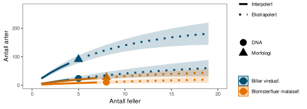
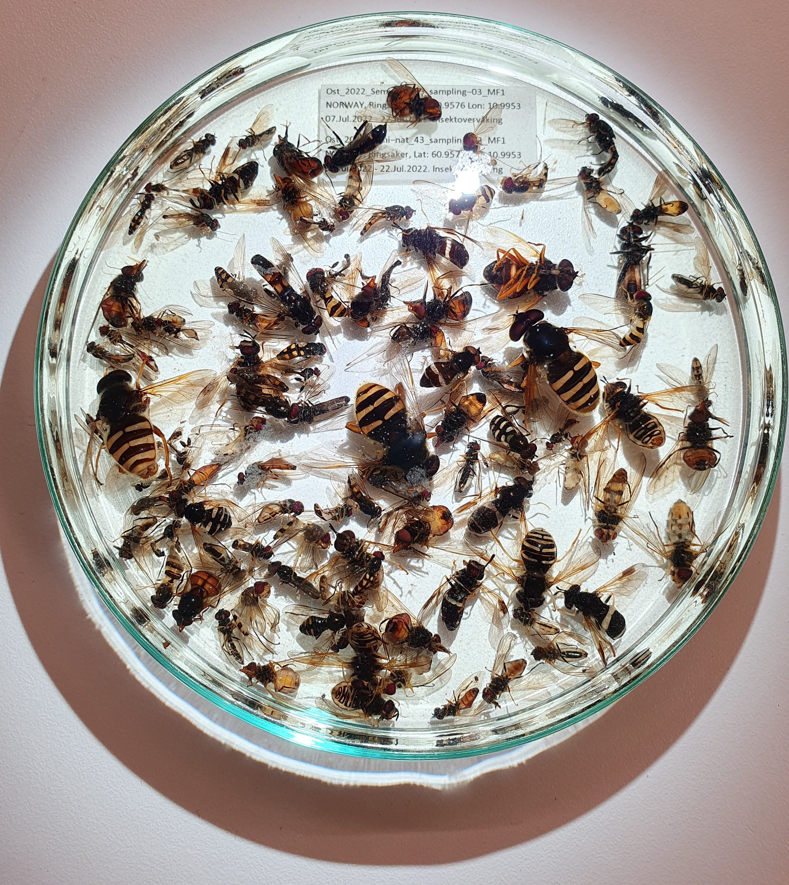
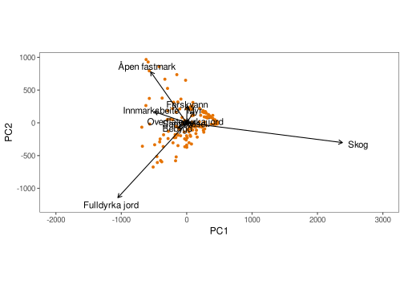
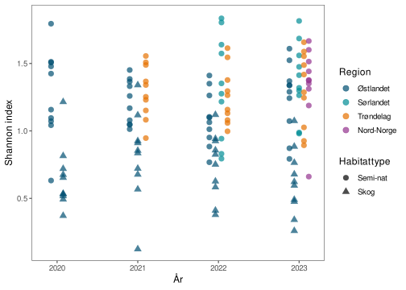
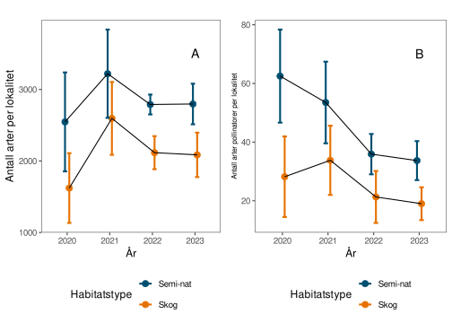
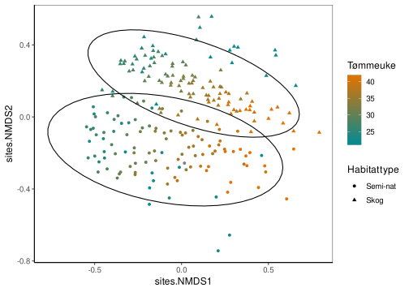

Insektovervåking på Østlandet, Sørlandet, Trøndelag og Nord-Norge
Rapport fra feltsesong 2023
Jens Åström , Tone Birkemoe , Sondre Dahle , Marie Davey , Torbjørn Ekrem , Frode Fossøy , Arne Laugsand , Ida Pernille Øystese Molander , Narve Nikolai Opsahl , Arnstein Staverløkk , Anne Sverdrup-Thygeson , Frode ØdegaardSammendrag
Denne rapporten beskriver arbeidet med en generell insektovervåking i Norge for 2023, finansiert av Miljødirektoratet. Hovedformålet med programmet er å overvåke regional status og endringer i insektmangfoldet. På sikt skal programmet også kunne vise trender i insektbestandene og forklare årsakene til eventuelle endringer, samt danne datagrunnlaget til indikatorer for vurdering av økologisk tilstand. Insekter er en ekstremt artsrik organismegruppe som står for en stor del av biomassen i terrestriske økosystem. De utfører viktige økosystemtjenester og er føde for mange andre organismer, bland annet fugler. Norge savner gode historiske tidsserier på insektforekomster, noe som ble brakt til oppmerksomhet etter at internasjonale studier viste på betydende nedganger de seneste tiårene.
Prosjektet baserer seg på passiv fangst av flyvende insekter ved hjelp av malaisefeller, supplert med vindusfeller i skog for å øke fangsten av biller. Metoden fanger store mengder med insekter, men den totale biomassen per lokalitet og år (ca. 230 gram) er såpass lav at den ikke forventes å påvirke bestandene negativt. Artene identifiseres ved hjelp av DNA-metastrekkoding og kun enkelte funn blir bekreftet med tradisjonelle morfologiske analyser. Nøyaktigheten på koblingen mellom DNA og artsnavn varierer mellom artsgrupper og er avhengig av kvaliteten i tilgjengelige referansebibliotek. Prosjektet jobber kontinuerlig med utbedring av referansebiblioteket, og bidro med strekkoder for ytterligere 340 norske arter i 2023. Validering av identifiseringen gjennom tradisjonell metodikk viser at DNA-metastrekkoding ikke klarer å fange opp alle artene i hver prøve, og at markøren vi bruker ikke kan skille mellom alle arter. Dette gjelder spesielt nært beslektede arter som er veldig like genetisk, eller arter som hybridiserer og som derfor utveksler DNA. Det har vist seg spesielt vanskelig å fange opp DNA fra biller gjennom den milde “lyseringen” som brukes, da det harde eksoskjelettet ikke avgir mye DNA. I det store hele er likevel DNA-metastrekkoding den eneste fremkommelige veien for så store materialer og metodikken klarer å fange opp et langt større insektmangfold enn det som hadde vært mulig med kun tradisjonell metodikk.
Én fordel ved å bruke en mild lysering og å spare på insektene etter metastrekkodingen er at identifiseringen kan etterprøves, og at enkelte interessante funn kan valideres i etterkant. For eksempel ble identifiseringen av den antatt utdøde gressmøllen Elachista quadripunctella nylig verifisert. Prøveflasken var lagret på frys i over 1 år fra innsamlingen under sommeren 2022, og i følge metastrekkodingen inneholdt den over 700 arter, hvorav denne lille møllen trolig var representert av kun et individ. Dette eksemplifiserer verdien av å lagre prøvene etter prosessering og er et godt eksempel på hvordan DNA-identifisering kan samvirke med tradisjonelle taksonomiske metoder. En langtidslagring av prøvene fra programmet er ikke på plass ennå, men vil kunne ordnes med frittstående fryseconteinere. Dette bør ordnes senest til sesong 2025 for å ikke gå tom for lagringsplass.
Basert på de fire første sesongene så har overvåkingsprosjektet funnet et estimert artsantall på litt over 20.000 insektarter. Til sammenligning er det ca. 19.500 kjente insektarter i Norge fra tidligere, og vi antar derfor at overvåkingen, i kombinasjon med videre taksnonomiske analyser, vil tilføye mange nye arter for Norge. Det er flere tusen arter som er fanget mer enn 100 ganger i prosjektet så langt, men det store flertallet av arter er kun fanget én eller et fåtall ganger. Potensielt nye arter må vurderes av taksonomisk ekspertise, der vi kan låne ut prøver for morfologisk etterkontroll. Med sin størrelse og klimatiske gradient bidrar Østlandet så langt med flest arter, og vi finner her noen flere arter i semi-naturlig mark enn i skog. Deretter følger semi-naturlig mark i Trøndelag, semi-naturlig mark på Sørlandet, og til sist semi-naturlig mark i Nord-Norge. Overvåkingen har funnet 171 truede arter og det er funnet rødlistearter i nesten alle lokaliteter. Blant de mange artene som ikke er påvist tidligere i Norge er de fleste trolig stedegne men tidligere ikke observerte arter, eller er de ikke registrert i offentlige digitale kilder. Noen av disse artene kan også være feilbestemt, for eksempel fordi strekkodene ikke skiller mellom arter, eller fordi at offentlige referansebaser inneholder feil. Et mindre antall av artene som har blitt registrert i programmet er også listet opp i Fremmedartslista til Artsdatabanken. De arter som ifølge offentlige kilder ikke tidligere er observert i våre naboland bør vurderes av eksperter som potensielt fremmede arter.
Biomassen av insekter oppviser en nedadgående trend i de fire årene overvåkingen har pågått så langt. Nedgangene kan til en viss grad forklares med dårligere værforhold, og det er mulig at trenden er kortvarig og vil ta seg opp igjen. Været under fangstperiodene forklarer en stor del av variasjonen i biomasse gjennom sesongen, men det ser også ut til at været utenfor fangstperiodene er viktige forklaringsfaktorer. Særlig er en høy nedbørsmengde under kalde vintre forbundet med en høyere insektbiomasse den påfølgende sommeren, mens varmere og regnfulle vårer er negativt assosiert. Dette har sannsynligvis å gjøre med overlevelsen av individer fra tidligere år. Varmere temperaturer under sommeren ser også ut til å ha vedvarende positive effekter på insektbiomassen for samme periode ett år senere, noe som gjenspeiler effektene av reproduksjon.
Plantesamfunnet og landskapskomposisjonen rundt fellene har en langt svakere og mer usikker forklaringsevne for insektbiomassen enn værforholdene, men dette kan forbedre seg med data fra flere lokaliteter. Forklaringsgraden for semi-naturlig mark ville sannsynligvis også forbedres hvis man innhenter data for arealbruket i omkringliggende landskap. Til sist er det mulig at denne typen av forklaringsvariabler kan ha en større betydning på artskomposisjonen av insektsamfunnene enn på den totale biomassen, og her gjenstår flere analysemuligheter for fremtiden.
Med fire års data dekker vi snart hele landet i semi-naturlig mark, og kan dokumentere (om enn kortvarige) negative trender i insektmengdene. Overvåkingsprogrammet ser ut til å ha evne til å dokumentere grunnleggende årsaksammenhenger bak storskala utvikling av insektsamfunnene. Vi begynner også å få nok data til å skille ut noen mønstre i det nivået av biologisk mangfold som hittil har vært vanskelig å kartlegge, nemlig distribusjonen av genetisk innenartsvariasjon, men her trengs data fra flere år for å kunne trekke robuste konklusjoner. Prosjektet fortsetter å oppdage interessante arter og det lagrede materialet er av stor verdi for fremtidig forskning.
Abstract
This report describes the work on a general insect monitoring program in Norway for 2023, funded by the Norwegian Environment Agency. The main purpose of the program is to monitor regional status and changes in insect biodiversity. Ultimately, the program should also be able to show trends in insect populations and identify explanatory factor for the changes, as well as provide data for indicators to assess ecological status. Insects are an extremely diverse group of organisms that account for a large part of the biomass in terrestrial ecosystems. They perform important ecosystem services and are food for many other organisms, including birds. Norway lacks good historical time series on insect occurrences, something that was brought to attention after international studies showed marked declines in the past decades.
The project relies on passive trapping of flying insects using Malaise traps, supplemented with window traps in forests to increase beetle catches. The method captures large quantities of insects, but the total biomass per site and year (approximately 230 grams) is so low that it is not expected to negatively affect populations. Species are identified using DNA metabarcoding, and only select findings are confirmed with traditional morphological analyses. The accuracy of the link between DNA and species names varies among taxonomic groups and depends on the quality of available reference libraries. The project continuously works on improving the reference library and contributed barcodes for an additional 340 Norwegian species in 2023. Validation checks reveal that DNA metabarcoding don’t capture all species in a sample, or cannot distinguish between all species. This is especially true for closely related species that are genetically very similar, or species that hybridize and therefore exchange DNA. It has proven particularly difficult to capture DNA from beetles through the gentle “lysis” used, as their hard exoskeletons do not release much DNA. However, overall, DNA metabarcoding is the only feasible way for such large materials, and the method manages to capture a much greater insect diversity than would have been possible with traditional methods alone.
One advantage of using a gentle lysis and saving insects after metabarcoding is that identifications can be verified, and some interesting findings can be validated afterwards. For example, the identification of the presumed extinct grass-miner moth Elachista quadripunctella was recently verified. The sample bottle had been stored frozen for over 1 year since collection during the summer of 2022, and according to metabarcoding, it contained over 700 species, of which this small moth was likely represented by only one individual. This exemplifies the value of preserving samples after processing and is a good example of how DNA identification and traditional taxonomic methods can work together. Long-term storage of samples in the project is not yet in place but can be arranged with standalone freezer containers. This needs to be arranged no later than for the 2025 season to avoid running out of storage space.
Based on the first four seasons, the program has found an estimated number of over 20,000 insect species. For comparison, there are approximately 19,500 known insect species in Norway from previous records. Therefore, we assume that monitoring combined with further taxonomic analyses could add many new species for Norway. Several thousand species have been caught more than 100 times so far, but the vast majority of species have been caught only once or a few times. Potentially new species must be assessed by taxonomic expertise, where we can provide samples for morphological validation. With its size and climatic gradient, Østlandet contributes the most species so far, and here we find a few more species in semi-natural land than in forests. This is followed by semi-natural land in Trøndelag, Sørlandet, and finally Nord-Norge. Monitoring has found 171 threatened species, and threatened species have been found in almost all locations. Among the many species not previously recorded in Norway, most are likely native but previously unobserved species, or they are not recorded in public digital sources. Some of these species may also be misidentified, for example because barcodes do not distinguish between species, or because public reference databases contain errors. A smaller number are also listed in the Norwegian Biodiversity Information Centre’s list of alien species. Species that, according to public sources, have not been previously observed in neighboring countries should be evaluated by experts as potentially alien species.
The biomass of insects shows a declining trend over the four years of monitoring so far. The declines can be partly explained by adverse weather conditions, and it is possible that the trend is short-term and will recover. The weather during trapping periods explains a large part of the variation in biomass throughout the season, but it also appears that weather outside of trapping periods is important explanatory factors. Particularly, a high amount of precipitation during cold winters (i.e. snow) is associated with higher insect biomass the following summer, while warmer and rainy springs are negatively associated. This is likely related to the survival of individuals from previous years. Warmer temperatures during the summer also seem to have persistent positive effects on insect biomass for the same period one year later, reflecting the effects of reproduction.
The plant community and landscape composition around the traps have a much weaker and more uncertain explanatory power for insect biomass compared to weather conditions, but this may improve as the program expands to cover more locations. The explanatory power for semi-natural grasslands would likely also improve if more detailed data on land use in the surrounding landscapes were available. Finally, it is possible that this type of explanatory variables may have a greater impact on the species composition of insect communities than on the total biomass, and there remain several analysis opportunities for the future.
With four years of data, we are soon covering the entire country in semi-natural habitat, and can document (so far short-term) negative trends in insect biomass. The monitoring program appears to have the ability to document fundamental causal relationships behind large-scale developments in insect communities. We are also beginning to have enough data to distinguish some patterns in a level of biological diversity that has so far been difficult to map, namely the distribution of genetic intraspecific variation, but data from several years are needed to draw robust conclusions. The project continues to discover interesting species, and the stored material is of great value for future research.
1 Innledning
Insekter er den mest artsrike gruppen av organismer på jorden, og utgjør en stor del av biomassen på land, til tross for sin lille størrelse. Insekter spiller en viktig rolle som predatorer og plantespisere, parasitter, nedbrytere og pollinatorer. De er også en viktig fødekilde for andre dyr, som for eksempel fugler. Hvis vi får store forandringer i mengden insekter eller mister viktige arter vil det derfor kunne ha stor effekt på det øvrige økosystemet. Flere rapporter beskriver at bestandene av insekter går ned verden over (Hallmann et al. 2017; Strien et al. 2019; Seibold et al. 2019; Wagner 2020; Soroye et al. 2020; Klink et al. 2020), men vi vet lite om hvordan situasjonen har endret seg over tid i Norge. Derfor er det viktig med en god nasjonal overvåking for å få konkrete kunnskaper om hva som skjer med insektene. NINA har på oppdrag fra Miljødirektoratet utarbeidet et program for systematisk overvåking av insekter generelt i landet, med mål om å kartlegge og følge med på situasjonen for insektene i Norge.
Denne rapporten sammenfatter virksomheten i 2023, som er det fjerde året i en generell overvåking av terrestriske insekter i Norge, på oppdrag av Miljødirektoratet. Utforming, analyser og tekst følger i store trekk tidligere rapporter (Åström et al. 2022, 2023), men resultatene er oppdaterte og gjenspeiler funnene i 2023. Vi baserer analyser og figurer på hele datasettet i 2020-2023, hvis ikke annet er angitt.
Siden 2020 har det blitt samlet inn insekter i økosystemene skog og semi-naturlig mark på Østlandet. I 2021 ble programmet utvidet til i semi-naturlig mark i Trøndelag, i 2022 til Sørlandet, og i 2023 til Nord-Norge. I 2024 vil programmet bli landsdekkende da det er planlagt en utvidelse til semi-naturlig mark i Vestlandet. Overvåkingsopplegget bygger på at man gjenbesøker samme lokalitet etter 5 år, og at man i hver periode på 5 år overvåker 50 lokaliteter per habitatstype og region i et fullt omløp. Vi er dermed fortsatt i oppstartfasen, da vi velger ut 10 nye lokaliteter per økosystemtype og region hvert år.
Malaisefeller er den viktigste innsamlingsmetodikken for alle lokaliteter, med 1 felle per lokalitet. I tillegg benytter vi 4 vindusfeller i hver av skogslokalitetene. Malaisefellene fanger et bredt spekter av alle flygende insekter, men fanger spesielt mye av tovinger og veps. Vindusfellene fanger et mindre antall insekter, men er særlig rettet mot biller, som har en betydningsfull rolle i skogen. Identifiseringen av insektene blir gjort ved hjelp av DNA-metastrekkoding etter en “mild lysering” av fellematerialet, som i stor grad bevarer materialet og muliggjør manuell etterkontroll av enkeltindivider. Vi understreker at artsfunnene fra denne overvåking ikke er morfologisk verifiserte, men baserer seg helt på DNA-sekvenser og matching mot referansebibliotek. Verifisering av artsfunn krever manuell håndtering av enkelte insekter av taksonomisk ekspertise. Selv om manuell verifisering av lagrede prøver i mange tilfeller vil være mulig er det for tidskrevende til å gjøres regelmessig. Vi tømmer fellene annenhver uke, med ambisjon om å dekke inn hoveddelen av flyvesesongen (fra april til oktober) og bruker samme felletyper hvert år. I tillegg til DNA-analyser, måles den totale biomassen i prøvene som våtvekt etter å ha helt ut etanolen.
Målet med overvåkingen er ikke å oppdage alle insektarter i landet, men å måle utviklingen av den generelle mengden og artskomposisjonen hos insektsamfunnene, samt å samle inn forklaringsvariabler som hjelper oss å forstå og forutse forandringer. Uansett fangstmetodikk og identifiseringsteknikk vil man få noen skjevheter, da visse artsgrupper går i fellene oftere enn andre, og noen artsgrupper identifiseres oftere enn andre grupper. Her står man ovenfor flere tekniske valg, som alle kan påvirke datamaterialet noe, der vi i løpet av oppstartsfasen gjør oss viktige erfaringer. Når man har vel har etablert et overvåkingsprogram er det da viktig å holde innsamlings- og identifiseringsmetodikken så konstant som mulig over tid, for å forenkle en sammenligning av dataene over tid.
Overvåkingsprogrammet fanger inn en svært stor diversitet av insekter. Denne diversitet måles gjennom at man deler inn all insekt-DNA i separate arter, basert på forskjellene hos DNA-sekvensene. I tillegg måler vi innenartsvariasjonen hos artene, ved å registrere forskjeller i DNA innenfor hver art. DNA-metastrekkoding er en svært kraftfull teknologi, som kan håndtere store prøvemengder relativt kostnadseffektivt. Den har også noen utfordringer, der den største er å plassere DNA-kodene i et taksonomisk tre, og sette kjente artsnavn på dem. Bestemmelse av arter avhenger av hvor komplett referansebiblioteket er med sekvenser og tilhørende artsnavn. Samtidig er man ikke avhengig av at alle DNA-varianter får et artsnavn for å kunne følge med på endringer i biodiversitet over tid, eller for å kunne sammenligne biodiversitet i forskjellige områder. Vi kan derfor overvåke og følge med på utviklingen av mange insekter som vi ennå ikke vet navnet på. Vi vil etter hvert også kunne navngi flere og flere arter, ettersom referansebibliotekene utvides. Man vil dermed også kunne sette navn på fler og fler insekter i data fra tidligere år.
Denne rapport inneholder - i tråd med forrige år - en oppsummering av hvordan landskapskomposisjonen for de to økosystemtypene semi-naturlig mark og skog overlapper og skiller seg fra hverandre, samt eksempelkart på variasjonen mellom lokaliteter. Vi viser et generelt bilde over insektfunnene i de ulike lokalitetene over tid. Vi viser også en oversikt over miljøvariablene vi samler inn i felt, og som vi har tilgang til via offentlige kilder, samt undersøker forklaringsevnen til disse for variasjonen i insektfangstene, fremst i biomasse. Vi estimerer totalt artsantall for de regioner og habitater vi har undersøkt, og ser nærmere på hvordan diversiteten fordeler seg mellom lokaliteter. Vi oppsummerer videre funn av rødlistede og fremmede arter, samt arter vi ikke har observert i Norge tidligere.
Nytt for i år er at vi ser på forklaringsverdien av værforholdene utenfor innsamlingsperioden, f.eks. effekten av vinterværet på sommerens insektforekomster.
2 Lokaliteter
På Sørlandet, Østlandet og Trøndelag fortsatte feltarbeidet i samme omfang som tidligere år, det vil si 10 lokaliteter i semi-naturlig mark, og i tillegg 10 lokaliteter i skog på Østlandet (Åström et al. 2023). I tillegg ble overvåkingen i 2023 utvidet til semi-naturlig mark i Nord-Norge (Figur 1). Opplegget følger den generelle planen beskrevet i Åström et al. (2019), med et forskjøvet design, der man velger 10 nye lokaliteter i hver økosystemtype og region de første 5 årene, for så å starte med gjenbesøk i lokalitetene i år 6. Første gjenbesøk på Østlandet blir da i 2025, og andre gjenbesøk i 2030. Denne rulleringen er koordinert med omløpet i Arealrepresentativ naturovervåking (ANO) (Tingstad et al. 2019). Et forskjøvet design gir mer mellomårs-støy i dataene, men øker antallet lokaliteter, og dermed mulighetene for å undersøke effekten av påvirkningsfaktorer på forekomsten av insektene. En stor del av mellomårs-støyen er sannsynligvis forårsaket av storskala variasjon i værforhold, som vil være den samme uavhengig hvilke lokaliteter man besøker. Noe av resten av variasjonen vil man kunne “ta høyde for” ved å inkludere lokale forklaringsvariabler.
2.1 Utvalg av lokaliteter
Lokalitetene i overvåkingen er definert etter SSB sitt 500x500m landsdekkende rutenettverk og kan dermed enkelt kobles sammen med diverse nasjonal statistikk. Så langt som mulig bruker vi de 1 000 tilfeldige rutene av disse som inngår i ANO (Tingstad et al. 2019). Dette øker sjansen for samlokalisering med annen kartlegging.
Lokalitetene ble i 2023 valgt ut etter samme metode som tidligere år, hvilket i hovedsak er et randomisert utvalg, stratifisert etter habitatstype. For skogslokalitetene tar vi utgangspunkt i de ruter som skal kartlegges samme år i ANO, for å knytte sammen disse datasettene og for å få en full ANO-registrering på en kostnadseffektiv måte. Fra disse rutene valgte vi manuelt ut 10 ruter på Østlandet som inneholdt mer enn 50 % skog (etter arealtype i AR5) og som hadde en så stor geografisk spredning over området som mulig. Dette gjør vi for å dekke inn variasjonen i regionen så bra som mulig hvert år. Metodikken fortsetter å fungere bra for skog, og dekker en stor variasjon i skogtyper og høydenivåer.
Utvalget er mer utfordrende for semi-naturlig mark (Åström et al. 2020a, 2020b). ANO-kartleggingen treffer sjelden denne habitatstypen og vi er derfor nødt til å velge fra det 10 000 ruter store reserveutvalget til ANO. Som tidligere år brukte vi kriteriene at rutene skulle inneholde minst 30 % fulldyrka mark, overflatedyrka mark eller innmarksbeite til sammen, samt minst 20 % overflatedyrka mark eller innmarksbeite til sammen. For å utelukke de mer intensivt dyrkede arealene, forkastet vi ruter som inneholdt mer enn 50 % fulldyrka mark. Kartgrunnlaget var også her arealtyper i AR5. Denne noe kompliserte utvalgsprosedyren er et resultat av metodisk uttesting og dialog med oppdragsgiver. Av dette utvalget trakk vi 10 tilfeldige ruter på Østlandet, 10 i Trøndelag, 10 på Sørlandet, og 10 i Nord-Norge. Vi gjør leseren oppmerksom på at “Semi-naturlig mark” etter disse kriterier utgjør en mindre del av jordbrukslandskapet i Norge, som typisk domineres av mer intensivt dyrkede arealer, ofte med en enda kraftigere menneskelig påvirkning på insekter. Hvis man hadde brukt en enda mer strikt definisjon av semi-naturlig mark, for eksempel Naturtyper i Norge (NiN) sin “Boreal hei”, “Semi-naturlig eng”, “Semi-naturlig strandeng” og “Kystlynghei” ville dette ha resultert i et utvalg som er enda mindre representativ for dagens jordbruksmark.
Etter at lokalitetene er valgt ut, kontaktes grunneiere for tillatelse for oppsett av insektfeller. Dette ble i hovedsak gjort over telefon, gitt den korte tidsrammen. Generelt er grunneierne positive, men det kan ta litt tid å finne og etablere kontakt med alle grunneiere. Store grunneiere med formaliserte kontaktveier tar som regel lengre tid enn privatpersoner.
2.2 Landskapskomposisjon for lokaliteter
De fleste av landskapene rundt fellene er heterogene og inneholder flere typer arealer. Dette gjelder spesielt de semi-naturlige lokalitetene, hvilket også gjenspeiler mye av jordbrukslandskapet i Norge. Selv om noen av landskapene er en miks av både jordbrukslandskap og skog, kan de deles opp i typiske grupper der økosystemtypene generelt skiller seg fra hverandre. Figur 2 viser en NMDS-ordinasjon av variasjonen av landskapskomposisjon for de to økosystemtypene i 2023. Ordinasjonen er basert på totalt arealdekke av hver arealtype i AR5, innen en 1 km bufferradius rundt sentrum av lokalitetene. Polygonene i figuren ringer inn de to økosystemtypene, og tallene viser posisjonen for enkelte lokaliteter (i nummerorden). De fleste skogslokaliteter ligger langt til høyre i NMDS-akse 1, hvilket preges av stor andel skog og myr, mens noen ligger ligger inneklemt i kulturlandskap og derfor ligger lengre til venstre. Lokalitetene i semi-naturlig mark preges av relativt store innslag av innmarksbeite, fulldyrka mark, overflatedyrka mark og åpen fastmark. Akse 2 gjenspeiler i jordsmonnet og potensialet for intenst bruk, med overflatedyrket mark eller åpen fastmark nederst, og fulldyrka mark og mer bebyggelse høyest.

Figur 3 viser variasjonen i landskapene rundt semi-naturlig mark. Semi-nat_87 ligger langt ned til høyre på NMDS-akse 1 i Figur 2, og karakteriseres av en liten mengde fulldyrka jord og en relativt stor mengde myr og ferskvann. Semi-nat_71 ligger sentralt på NMDS-akse 1 og høyt på akse 2, som karakteriseres av mye fulldyrka jord. Semi-nat_81 er et eksempel på et landskap med mer bebyggelse og veier. Til sist ligger Semi-nat_100 langt ned på NMDS-akse 2, og karakteriseres av høy andel innmarksbeite og overflatedyrka mark.
Figur 4 viser variasjonen i landskapene rundt skogslokalitetene i 2023. Skog_34 ligger nest lengst til høyre på NMDS-plotten og representerer et skogslandskap med relativt mye myr. Skog_31 ligger lengst til venstre og representerer et landskap med relativt mye dyrket mark av varierende karakter. Skog_38 og Skog_33 ligger langt til høyre og representerer mer homogene skogslandskap med relativt lite fulldyrka mark og bebyggelse.
3 Felletømminger
Datainnsamlingen kunne settes i gang litt tidligere i 2023 enn tidligere år på grunn av tidligere igangsetting fra oppdragsgiver. For Sørlandet ble det start i midten av april og i Trøndelag i første halvdelen av mai. På Østlandet gjorde sein snøsmelting at fellene ble plassert ut litt spredt i tid i løpet av mai. Til sist ble fellene plassert ut i Nord-Norge i løpet av juni. Det langsiktige målet er ellers å fange insekter gjennom hele den dominerende flygeperioden, og samle inn data fra april til oktober i alle lokaliteter, gitt lokale variasjoner i vær og snøforhold.
Fellene ble tømt annenhver uke av åtte ulike team, basert henholdsvis i Stavanger, Oslo, Lillehammer, Trondheim, Brønnøysund, Bodø, Tromsø, og Kirkenes. Antall dager i hver felleperiode varierte noe av praktiske årsaker. Det nøyaktige antallet felledager for hver tømming er notert og kan brukes i analyser for å standardisere funnene. ?@tbl-no-samplings-per-lok oppsummerer antallet felletømminger og totalt tidsspenn for hver lokalitet i 2023. Tabell 2 viser det totale antallet felleprøver som ble samlet inn.
For noen insektarter kan etanolen virke tiltrekkende, men fellene er i hovedsak passive, da de kun fanger de insekter som selv flyr inn i fellene. Sammenlagt for alle lokaliteter har vi i løpet av 2020-2023 samlet inn 36.2 kg insekter, målt i våtvekt uten etanolen (konserveringsvesken insektene samles i) (Tabell 1). Fordelt per lokalitet og år tilsvarer det omtrent 231 gram, der den aller meste biomassen utgjøres av relativt vanlige tovinger. Vi vurderer at innsamlingen har en svært liten effekt på de lokale populasjonene av insekter, og også bør kunne foretas i f.eks. verneområder.
| År | Start | Slutt | Antall prøver | Våtvekt (kg) |
|---|---|---|---|---|
| 2020 | 2020-05-11 | 2020-09-18 | 379 | 8.54 |
| 2021 | 2021-06-07 | 2021-10-18 | 526 | 7.12 |
| 2022 | 2022-05-09 | 2022-10-23 | 750 | 10.33 |
| 2023 | 2023-04-11 | 2023-10-22 | 994 | 10.20 |
| Sum | - | - | 2649 | 36.19 |
?(caption)
| Felletype | Antall prosesserte felleprøver |
|---|---|
| Malaisefelle | 554 |
| Vindusfelle | 440 |
3.1 Ekstremværet Hans

Ekstremværet Hans kom inn over Skandinavia fra 7 til 9 august, med harde vinder og stor nedbør. Vindene ødela noen malaisefeller og tømmeskjemaet kunne ikke følges helt etter planen på Østlandet på grunn av stengte veier. Dermed ble det en litt lengre innsamlingsperiode for noen lokaliteter i august. Fellene ble reparert eller erstattet så raskt som mulig, og tømmingen ble etter hvert synkronisert opp mot det vanlige 2-ukers intervallet. På Sørlandet ble det dårlig fangst for noen lokaliteter i innsamlingsrunde 9 på grunn av ødelagte feller. I tillegg ble det noe kortere innsamlingsperiode i runde 10 for noen lokaliteter, da fellene var såpass ødelagte at de var nødt til å erstattes (Figur 5).
4 Identifisering av arter med DNA-metastrekkoding
Identifiseringsmetodikken er uforandret siden i fjor dette kapittel er i stort sett en gjentakelse av forrige års rapport (Åström et al. 2023). Vi fortsetter å følge protokollen med en mild lysering av insektene for ekstraksjon av DNA som vi har utviklet gjennom flere år (Åström et al. 2020a, 2020b). Denne metoden medfører at vi kan bevare insektene for morfologiske analyser i etterkant, og dermed kan sjekke DNA-baserte funn av interessante arter samt identifisere taksa som mangler i referansebibliotekene.
Protokollen ser fortsatt ut å fungere greit og vi fulgte samme prosedyre i 2023. Vi følger også den samme pipelinen for bioinformatiske analyser som vi har utviklet tidligere. Referansebasen med strekkoder har derfor ikke blitt oppdatert fra forrige års rapport, men dette vil bli gjort i løpet av 2024.
4.1 Forbehandling av prøvene
Forbehandling består i å måle etanolkonsentrasjon, sile av etanolen og veie prøvene før lysering og ekstraksjon av DNA. Etter en del modifiseringer av protokollen i 2021 måler vi nå bare våtvekt (etter at konserveringsvæske, etanolen, er helt av). Vi har også som tidligere år tilsatt ekstra arter til prøvene som en positiv kontroll (spiking). Dette gjør vi for å kunne evaluere protokollen vi bruker og muligens si noen om relativ biomasse av ulike arter mellom prøvene på sikt. I samtlige prøver ble det derfor tilsatt 10 melormer (Tenebrio molitor), 3 sirisser (Gryllus assimilis) og 10 frøbiller (Callosobruchus maculatus). Disse artene representerer ulike størrelser, taksa og hardhet, forekommer ikke vilt i Norge, men er likevel lett tilgjengelige kommersielt eller via egenproduksjon på lab. Etanolen ble silt av manuelt gjennom en 250 µm filterduk før flasken ble plassert opp ned i en trakt for videre avrenning i 35 minutter (skal etter det ikke dryppe oftere enn 1 gang per 20 sekunder). Den brukte filterduken ble deretter klippet opp og lagt med i prøven for å få med eventuelle insektdeler som festet seg i duken. Ny filterduk ble anvendt for hver prøve og filterkork ble kloret for å unngå kontaminering mellom prøver. Etter siling ble flaskene veid med kork for våtvekt av innsamlet materiale. 64 tilfeldige tomme flasker ble veid som referanse, og middelverdien av disse blir trukket fra i beregningen av nettovekten av insektbiomassen.
4.2 DNA-ekstraksjon og etterbehandling
Felleprøvene ble lysert ved å tilsette ATL-buffer og proteinase-K (100mL ATL = 1mL proteinase-K) i tilpasset volum, slik at alle insektene ble dekket av bufferløsningen, og deretter inkubert i 3.5 timer med risting (120 RPM) på 56°C. Til sist ble 200 µL av bufferløsningen brukt i en DNA-ekstraksjon ved hjelp av et Blood & Tissue Kit (Qiagen).
For å stoppe lyseringsprosessen i felleprøvene og bevare materialet bedre ved lagring, ble flaskene tømt for bufferløsning, fylt med vann og silt to til tre ganger med 500 µm filtereduk for å fjerne det meste av bufferløsningen. Deretter ble flaskene fylt med den samme etanolen som først ble silt av (under forarbeid), eventuelt med påfyll for å nå minimum 90 % etanol, og satt på lager. Løsning med ATL-buffer/proteinase K/skyllevann ble samlet opp i spesialbeholdere og sendt til avfallshåndtering.
Prøvene ble midlertidig lagret føre og etter prosessering i et kjølerom i NINA-huset i Trondheim. Etter det blir de langtidslagret i et fryserom i NINA sitt separate lagerbygg (se Kapittel 6).
4.3 DNA-amplifisering og sekvensering
En del av det mitokondrielle genet COI ble oppkopiert (amplifisert) ved hjelp av primerne BF3-BR2 (Elbrecht et al. 2019) i en standard to-trinns Illumina protokoll. Første PCR (polymerase chain reaction) inkluderte primere med «overhang adaptor»-sekvenser, mens Illumina-indekser ble tilsatt i den andre PCR-kjøringen. PCR-produktene ble kvalitetssikret på en Tape Station (Agilent 4200) og renset med kuler (MAG-BIND RXN PURE PLUS) etter hver PCR. Etter uttesting av antall PCR-sykler gjennom qPCR-analyser i 2021, besluttet vi å redusere antallet sykluser fra 35 til 22. Til slutt ble prøvene normalisert og slått sammen til et bibliotek for sekvensering. Alle prøvene ble sekvensert på en Illumina NovaSeq maskin ved Norwegian Sequencing Centre (NSC) i Oslo.
4.4 Bioinformatikk
Primerne ble fjernet med programmet cutadapt v. 1.9.1, og DNA-sekvensene ble deretter filtrert, kvalitetssikret og feilrettet med programmet dada2 (Callahan et al. 2016) for å generere ASV-er (Amplicon Sequence Variants). ASV-er er de kvalitetssikrete DNA-sekvensene vi bruker for å skille arter, men også for å se på genetisk variasjon innen arter. For å klassifisere ASV-ene til arter, brukte vi programmet RDP-Classifier, som er en «Bayesisk sannsynlighetsestimator» (Wang et al. 2007). Istedenfor å kun bruke en overordnet likhet (identity) mellom en ASV fra våre data og en referanse-DNA-sekvens i Genbank, bruker denne metoden en trenet («trained») database som gir en sannsynlighet for at en ASV tilhører en viss art/slekt/familie osv. Vi bruker en slik trenet database for COI utviklet ved NINA. Den er basert på en insektdatabase laget av Porter and Hajibabaei (2018) med hovedfokus på nordamerikanske arter, men vi har lagt til COI-sekvenser for 4061 norske norske referansearter i 2 021, og 2 908 flere arter i 2022, (Tabell 3).
| Klasse | Porter | Modifisert 2021 | Modifisert 2022 |
|---|---|---|---|
| Arachnida (edderkoppdyr) | 4778 | 4952 | 5124 |
| Chilopoda (skolependere) | 135 | 147 | 147 |
| Collembola (spretthaler) | 268 | 377 | 388 |
| Diplopoda (tusenbein) | 246 | 246 | 246 |
| Insecta (insekter) | 65660 | 69426 | 72151 |
| Ikke målgruppe | 39693 | 39695 | 39698 |
4.5 Kvalitetssikring av DNA-basert identifisering av arter
Med store datasett generert fra DNA-metastrekkoding er det en stor utfordring å kvalitetssikre artslistene. Falske positiver, dvs. påvisning av en art som egentlig ikke finnes i prøven, og som ofte er feilbestemmelser koblet til feil og mangler ved referansedatabasen, er generelt en utfordring med datasett fra DNA-metastrekkoding. Vi har derfor utviklet et flytskjema for hvordan vi har klassifisert og kvalitetssikret dataene (Figur 6), og beskrevet dette nærmere her.
Alle DNA-sekvensene ble først filtrert, kvalitetssikret, og feilrettet for å unngå støy i dataene og unngå et kunstig høyt estimat av arter og genotyper. Selv om vi bruker primere som stort sett amplifiserer DNA fra rekken leddyr (Arthropoda), kan det forekomme amplifisering av små mengder av DNA fra andre organismer. Ved bruk av RDP classifier og vår in-house database fjernet vi først de ASV-ene som ikke ble klassifisert til målgruppene (Klasse Arachnida, Chilopoda, Collembola og Insecta). Dette DNAet tilhører hovedsakelig bakterier, sopp og planter som driver inn i fellene gjennom luften eller transporteres utenpå eller inne i insektene.
Alle offentlige sekvensdatabaser er ufullstendige og mangler referansesekvenser for en god del organismer. I tillegg inneholder de en del sekvenser som er feilbestemt, og dermed har feil artsnavn koplet til en viss referanse-sekvens. Vi kvalitetssikret mulige feilbestemmelser til målgruppene koblet til manglende referansesekvenser ved hjelp av BLAST mot Genbank (NCBI-nr databasen). I tillegg gjorde vi en manuell vurdering av ASV’ene som pekte på feilbestemte referansesekvenser i databasen og fjernet de som ikke tilhørte målgruppene.
Fra RDP-Classifier har vi laget en artsliste basert på målgruppe-sekvensene og vår in-house referansedatabase. Men siden denne databasen ikke er komplett verken for norske eller ikke-norske arter, må vi gjøre en del vurderinger for å si noe om hvor godt et artstreff er, og dette kaller vi arts-konfidens og angir denne som høy, moderat, lav eller dårlig (Figur 7). Arter som vurderes til moderat, lav, eller dårlig arts-konfidens, har vi i denne rapport utelatt fra de analyser og tabeller som er avhengig av artsidentitet (f.eks. rapportering av rødlistede og fremmede arter, potensielt fremmede arter eller nye arter for Norge, selv om en første skanning etter fremmede arter også inkluderer arter med moderat konfidens).
4.6 Horisontskanning og identifisering av nye arter for Norge
Med storskala artsinventering har vi mulighet til å overvåke det kjente artsmangfoldet i Norge, deriblant rødlistede og fremmede arter, men vi oppdager også nye arter som ikke har vært påvist i Norge tidligere. Vi har derfor kryss-sjekket artslistene mot norsk rødliste fra 2021 og fremmedartslisten fra 2023. Ved bruk av Artsnavnebasen, GBIF, og flere internasjonale databaser av fremmede arter i europeiske land (DAISIE-partners 2008; Saul et al. 2017; Pagad et al. 2018; Roy et al. 2019; Brundu et al. 2022) har vi også opprettet en liste over arter som er påvist tidligere i Fennoskandia basert på forekomster i GBIF, men ikke i Norge, og en liste over arter som ikke er funnet i Fennoskandia tidligere (Figur 8).
4.7 Sannsynlighet for klassifisering til artsnivå
Alle DNA-kopier blir først delt inn i grupper etter metodikken beskrevet ovenfor, der hver gruppe tilsvarer en art. Neste trinn er å sette et navn på disse grupper (“arter”). Hvis mulig kobler vi et artsnavn til “arten”, hvis ikke det er mulig prøver vi et slektsnavn, deretter familienavn og så videre. Andelen av “artene” som vi kan sette et artsnavn på varierer svært mye mellom ulike ordener og vi finner også en sterk sammenheng med hvor mange DNA-kopier vi har fra hver art. I Figur 9 har vi på x-aksen sortert alle “arter” etter hvor mye DNA vi har samlet totalt fra hver av dem. Lengst til venstre er arten med mest DNA, fulgt av art nr 2 i forhold til mengde DNA, og så videre. I Figur 9 (A) viser Y-aksen hvor mange av “artene” som har blitt gitt et artsnavn, kun et slektsnavn, kun et familienavn og så videre. Den vertikale streken i Figur 9 (A) viser grensen for 90 % av alle DNA-kopier i datasettet (til venstre for streken). Av disse artene bestemmer vi ca. 70 % til art. Men vi ser også at 90 % av DNA-kopiene representerer en liten andel av artene vi påviser (1608 av totalt 20691arter), dvs at de aller fleste artene i datasettet finnes til høyre for denne streken. Dette samsvarer også med Figur 68 der en liten relativ del av artene dominerer fangstene. Til sist viser de nedadgående horisontale kurvene at vi har mindre sannsynlighet for å bestemme en DNA-kopi til art jo sjeldnere denne kopien er i datasettet. Dette tolker vi som at vi har DNA-referanser fra de mest vanlige artene i referansedatabasene våre, men ikke i like stor grad fra de mer sjeldne artene. I Figur 9 (B) viser Y-aksen den relative mengden av “artene” som får et artsnavn koblet til seg, det vil si sannsynligheten for å identifisere en DNA-streng til art. Her ser vi store forskjeller mellom ulike ordener. Sannsynligheten for artsbestemmelse av biller (Coleoptera) og størsteparten av sommerfuglene (Lepidoptera) er svært god, mens den er lavere for en stor del av tovingene (Diptera) og vepsene (Hymenoptera). Dette stemmer godt med hva vi vet om dekning i referansedatabasene våre, det vil si at det mangler mange referanser for disse grupper. De to sistnevnte gruppene er også svært artsrike, hvilket kan forklare hvorfor disse grupper ikke er strekkodet til samme nivå som enklere grupper.

4.8 Sekvenseringsdybde og antall arter påvist med DNA-metastrekkoding
I 2020 fant vi en positiv sammenheng mellom antall DNA-kopier (sekvenseringsdybde) per prøve og antall arter vi fant i prøven. Dette betyr at vi ikke kunne være sikre på det totale artsantallet for prøver med få DNA-kopier. I 2021 gjennomførte vi en del endringer i labprotokollene og gikk over til en ny sekvenseringsmaskin som ga et mye større utbytte i antall DNA-kopier. I likhet med fjorårets data finner vi i 2023 ingen sterk sammenheng mellom antall DNA-kopier og antall arter (Figur 10), og vi ser derfor fortsatt ut til å ha tilstrekkelig sekvenseringsdybde.

4.9 Sammenligning mellom DNA-basert og morfologisk artsbestemmelse
For å gjøre en vurdering av DNA-basert artsbestemmelse, ble 10 malaisefelleprøver gjennomgått for morfologisk artsbestemmelse av taksonomiske eksperter. Som i 2022 ble dette gjort for gruppen blomsterfluer (Figur 13), som er en passelig stor gruppe vi har taksonomisk kompetanse på. I tillegg ble vindusfelleprøver fra 5 tømminger (á 4 vindusfeller hver) gjennomgått av en taksonomisk ekspert på biller. Resultatene er noe dårligere enn tidligere år, men forskjellen kan være tilfeldig. Vi finner færre biller ved hjelp av DNA enn med morfologisk bestemmelse, og det er først og fremst de små artene som mangler, der lyseringen ikke ser ut til å klare å trekke ut tilstrekkelig DNA fra dyrene. For blomsterfluene fungerer metodikken bedre sammenlignet med morfologisk artsbestemmelse, men også her er de noen arter som metastrekkodingen ikke fanger opp (Figur 12, Figur 11). I tillegg klarer man ikke å skille mellom alle arter blomsterfluer med den markøren vi bruker, ettersom denne delen av genomet ikke har tilstrekkelig variasjon for å skillemellom enkelte nærbeslektede arter.
Noen av forskjellene i artslistene basert på DNA-metastrekkoding og morfologisk bestemmelse kan skyldes ulik navnsetting. Man kan for eksempel bruke synonymer eller feil navn på artene i minst én av metodene. I slike tilfeller vil søylene i Figur 12 jevnes ut, og de grå søylene som representerer arter som respektive metodikk ikke oppdaget, ville bli lavere. Man ville da forvente en lik art-akkumuleringskurve i Figur 11, da det kun er artsnavnene som er ulike. Vi har prøvd å harmonisere navnebruken så langt som mulig og det ser ikke ut å være en viktig forklaring her.
Det ser altså fortsatt ut som myk lysering og metastrekkoding ikke klarer å oppdage en god del av de innsamlete billeartene. Man bør derfor vurdere å knuse vindusfellematerialet for å øke mengden identifiserte biller. Dette ønsker vi å teste ut i fremtiden. Selv om sammenligningen med morfologisk bestemmelse identifiserer noen mangler i resultatene fra metastrekkodingen, er det fortsatt metastrekkoding vi anbefaler for de fleste prøvene i prosjektet. Det er ikke praktisk gjennomførbart å identifisere alle prøver morfologisk, både med tanke på tidsforbruk og den taksonomiske kompetansen det ville kreve. Dessuten ville store deler av de artsrike og mindre kjente gruppene allikevel ende opp uten artsnavn fordi de er ukjente for vitenskapen eller tilhører komplekse artsgrupper med behov for taksonomisk revisjon. Ved å benytte metastrekkoding til identifiseringen vil også hittil ukjente arter få en ‘merkelapp’ som kan benyttes i overvåkningssammenheng til tross for manglende artsnavn.


5 Referansestrekkoder for norske insekter
Som tidligere år, har vi tatt vevsprøver av arter som mangler eller har lav representasjon i Barcode of Life Data Systems (https://www.boldsystems.org). I hovedsak har vi benyttet relativt ferskt materiale av biller, vepser og nebbmunner i NTNU Vitenskapsmuseets samlinger, men bidrag fra eksperter utenfor prosjektkonsortiet har også blitt tatt med. Totalt ble det sendt inn 705 prøver fra 340 arter, hvorav 394 sekvenser fra 222 arter foreløpig er prosessert med DNA sekvens. Suksessraten for Heteroptera var lavere enn det vi tidligere har registrert. Vi vil undersøke muligheten for forbedringer av resultatene med vår samarbeidspartner, og forventer sekvenser fra flere av de innsendte artener i mars/april 2024. Blant artene som foreløpig er lagt til med referansestrekkoder i 2023 finner vi 9 Coleoptera (biller), 48 Hemiptera (nebbmunner), 124 Hymenoptera (veps) og 39 Lepidoptera (sommerfugler), de fleste samlet sør for Nordland. Alle data er tilgjengelig gjennom det åpne datasettet DS-ENTONOR5 i BOLD.
Det er en rekke utfordringer knyttet generering av referansesekvenser til insektarter som mangler i BOLD. Det kan være tekniske hindringer slik som primer-mismatch som hindrer mangfoldiggjøring gjennom PCR, men også mangel på nylig innsamlede, korrekt identifiserte individer. Sistnevnte er avhengig av både målrettet feltarbeid og taksonomisk kompetanse, noe som mangler for svært mange insektgrupper i Norge. Men, vi har et ganske aktivt miljø av hobbyentomologer som ønsker å bidra når de ser verdien av DNA strekkoder for egen forskning. Ytterligere insentiver for aktivering av denne typen folkeforskning ville vært interessant å prøve ut. I tillegg utvikles det nå protokoller for storskala genom-skimming av insekter fra vitenskapelige samlinger, blant annet gjennom det EU-finansierte prosjektet Biodiversity Genomics Europe. Denne metodikken muliggjør generering av referansesekvenser fra historisk materiale til en akseptabel pris og kan dermed dra nytte av vevsprøver fra identifiserte individer fra vitenskapelige samlinger (inkludert typemateriale). På sikt mener vi dette vil den mest effektive måten å tette hull i referansebiblioteket på, men på det nåværende tidspunkt vil det antakelig være mer fruktbart å aktivere større deler av det entomologiske miljøet til å bidra med identifiserte insekter for strekkoding.
Nye strekkoder blir regelmessig lagt til i prosjektets referansebiblioteket. Dette ble senest gjort ett år tilbake, men vil bli gjentatt igjen i løpet av 2024. Kort beskrevet foregår det slik at vi kryssjekker vår referansebase mot Artsnavnebasen, som er kuratert av Artsdatabanken, for å få en liste med arter vi savner strekkoder for. Denne listen blir siden sjekket automatisk mot BOLD, og opp til 5 strekkoder for hver art som mangler blir høstet og lagt til i vår referansebase. Hvis det finnes flere sekvenser å velge mellom, blir sekvensene fra individer fanget i Norge prioritert. Finnes de ikke fra Norge, letes det etter sekvenser fra Norden, deretter Europa og til slutt resten av verden. Den oppdaterte referansebasen blir videre kvalitetssikret for å unngå innsetting av feilbestemte sekvenser.
6 Lagring av felleprøver
Det viktigste poenget med å bruke en mild lysering for ekstraksjon av DNA fra felleprøvene, isteden for å knuse dem, er at insektene blir bevart for fremtiden. Man kan da etterprøve enkelte mistenkte feilbestemminger gjennom en morfologisk kontroll, lete opp uvanlige funn, eller komplettere DNA-bibliotekene gjennom å plukke ut og strekkode individer det mangler referanser for. Dette kan for eksempel være arter som DNA-metodikken har klart å bestemme til en gitt slekt, men der det mangler referanser for flere av artene i slekten, slik at vi ikke kan si hvilken av artene i slekten det er. Vi har allerede blitt kontaktet av forskere som ønsker å validere funn registrert på GBIF. Vi har da flere ganger klart å gjenfinne individet i de lagrete flaskene og fått bekreftet identifiseringen. Som eksempel kan vi nevne møllen Elachista quadripunctuella som senest var funnet i 1934 i Norge, og som er oppført i rødlista som regionalt utdødd (RE). Denne identifiseringen ble verifisert av Kai Berggren tidlig i 2024 etter gjenfunn i en av flaskene fra prosjektet. Prøveflasken var lagret på frys fra innsamlingen i 2022, og i følge metastrekkodingen inneholdt den over 700 arter, hvorav denne lille møllen trolig bare var representert av ett enkelt individ. Det er positivt at kvaliteten på de lagrete prøvene er så pass god at så skjøre arter som møll kan identifiseres manuelt. I tillegg til verifisering av enkelte funn kan de lagrete prøvene også brukes mer systematisk i forskningen. Vi har for eksempel inngått en intensjonserklæring for å bistå et artsprosjekt ved Vitenskapsmuseet som skal utrede taksonomien for stråfluer (Chloropidae), ved å gi de tilgang til de lagrete prøvene fra prosjektet. Verdien av å bevare prøvene etter metastrekkoding er rett og slett svært stor, og muliggjør en kvalitetskontroll og en forbedring av referansebibliotekene for metastrekkodingen.
Et annet poeng ved å lagre felleprøvene er at man beholder muligheten til å telle individene i fremtiden, kanskje med robot-teknikk som ikke ennå er utviklet. Det er flere forskergrupper som aktivt arbeider med utstyr som både kan identifisere og telle enkelte individer, men teknikken er ikke helt på plass for å tas i bruk i dette prosjektet enda. Materialet fra dette overvåkingsprogrammet er gjennom sin mengde og omfang helt unikt, i hvert fall i nasjonal sammenheng, og har potensielt en stor verdi for fremtidig forskning. Men dette er selvsagt avhengig av at man klarer å lagre prøvene. Prøvemengdene blir etterhvert svært store i et så omfattende prosjekt som dette.
Prøvene bør oppbevares så kaldt som mulig for å sikre kvaliteten på DNA best mulig. Kjølelager er bra, men optimalt bør prøvene oppbevares i frys. Prøvene er midlertidig lagret i et relativt stort fryselager til NINA, men der vil plassen etter hvert ta slutt. Overvåkingsprogrammet genererer ca. 1 000 flasker per år med det omfanget det har i 2024, det vil si 5 regioner med økosystemet semi-naturlig mark og 1 region med økosystemet skog. En malaiseflaske er på 700 ml og en plastboks i Figur 14 rommer 24 slike flasker. Hvis prosjektet kunne bruke all nåværende ledig kapasitet NINA sitt fryselager, det vil si at vi ikke ville konkurrere med andre lagringsbehov, ville vi ha plass for maksimalt 5 år til med prøvetaking, dvs. inklusive sesong 2028. Dette er lite sannsynlig, selv om vi ikke kan beregne andre prosjekters behov. Den beste løsningen er derfor at prosjektet ordner en dedikert lagringsplass med en forutsigbar kapasitet, i hvert fall til sesong 2025.
En fleksibel løsning som kan ordnes allerede til neste år er å bruke en ekstern frysecontainer. Det er i prinsippet en semi-trailer som er laget som et fryserom. En eller flere slike kan ligge ved siden av NINA sitt lagerbygg og driftes med elektrisitet. Vi har undersøkt mulighetene for leie eller kjøpe disse i to størrelser, 20 fot (ca. 6 meter, se Figur 15) og 40 fot (ca. 12 meter). Prisforskjellen er så pass liten at det er mest økonomisk å velge varianten på 40 fot. Leieprisene er så pass høye at man tjener på å kjøpe en container hvis man skal bruke den lengre enn 2 år. Pris for kjøp av en 40 fots container ligger på ca 150 000 NOK. Leieprisen for arealet å parkere en container på er ca 50 000 per år. I tillegg kommer kostnader med strømforbruk og periodisk service, som vurderes bli relativt lave.
Etter våre beregninger vil en 40 fots container romme nok prøver til ca 15 års drift av programmet, gitt at det foregår i dagens omfang (semi-naturlig mark i hele landet + skog i én region). Hvis man utøker programmet til å dekke skog i hele landet blir materialet omtrent det dobbelte, og en 40 fots container vil romme ca. 7 års innsamling. Foreløpig vurderer vi at vi har plass for 3-4 slike containere ved NINA sitt lager. Med en slik løsning kunne man da ha sikret lagring i 20 til 60 år, avhengig omfanget på programmet. Den øvre grensen for hvor lenge DNAet kan bevares ved en slik lagring er ikke kjent, og dette bør følges med på fortløpende. Vi bruker i dag enkeltindivider fra museum som har vært lagret på dårlig sprit i 100 år til DNA-analyser i andre studier. Det er ingen grunn til å betvile at vi ikke kan få DNA fra disse prøvene om 100 år fra nå. Midlertidig er det derfor vår vurdering at DNAen vil være godt bevart i en slik lagring, og at dette vil være en kostnadseffektiv løsning. Vi skal også i 2024 teste ut å komprimere prøvene, ved å helle av inneholdet på mindre flasker, slik at man kan få inn flere flasker i en boks. Hvis dette er vellykket, kunne man muligens få inn dobbelt så mange flasker per boks, og dermed doble lagringskapasiteten. Det er dog ikke opplagt at dette lønner seg, da arbeidskostnadene med å sile av insektene i hver flaske, og føre over dem til mindre flasker kan overstige kostnadene for å utvide lagringskapasiteten.
7 Forklaringsvariabler
I tillegg til selve innsamlingen av insekter registrerer vi også en rekke potensielle forklaringsvariabler, ved fellene og i det omkringliggende landskapet. Dette er viktig for å kunne forklare forekomstene og forandringene, og for å kunne isolere ut effektene av enkelte påvirkningsfaktorer. Alle faktorer som kan påvirke insektforekomster er naturligvis ikke kjente, og dette prosjektet klarer heller ikke å samle inn alle variabler som vi mener er potensielt viktige. Nedenfor følger en beskrivelse av de forklaringsfaktorer prosjektet samler inn i, både i felt og via PC.
7.1 ANO-registreringer
Lokalitetene i skog blir registrert innenfor den regulære Arealrepresentative naturovervåkingen (ANO) (Tingstad et al. 2019). I disse lokalitetene har vi derfor som regel data fra 18 sirkler á 250 \(m^2\) i hver rute. I de semi-naturlige lokalitetene blir av kostnadsgrunner kun én tilsvarende sirkel kartlagt.
En sentral måling i ANO-registreringen er dekningsgrad og antall karplanter innenfor ANO-rutene (1 \(m^2\)). Figur 16 viser variasjonen i disse målingene, der dataene er delt opp etter år og region for å kunne se eventuelle trender og forskjeller. I utgangspunktet ønsker vi ikke en tidstrend i disse figurene, da utvalget av lokalitetene er tenkt å være tilfeldig, og vi ikke forventer oss at forekomsten av karplanter forandrer seg så kjapt i løpet av et fåtall år. I 2020 og 2021 ble etter instruks de ANO-sirkler som faller innenfor dyrket mark registrert som ‘Sterkt endret mark’ og det ble ikke gjort en videre artsinventering i noen av disse sirklene. I 2022 ble muligheten for å kartlegge også disse ruter åpnet, og det ble gjort en mer detaljert kartlegging. Vi ser derfor færre lokaliteter med 0 % dekningsgrad av karplanter i 2022. Fra og med 2023 ble sirkelen som undersøkes fritt plassert, i stedet for å velge en sirkel etter ANO sitt vanlige nettverk. Sirkelen plasseres så nære som mulig til insektfellen, hvilket gjør at vi kan unngå fulldyrket mark. Posisjonene ble målt inn med høypresisjons-GPS med en typisk nøyaktighet på mellom 1-5 \(cm^3\) og i verste fall i underkant av 1 \(m^3\). Det ser ut å være en del variasjon i dekningsgrad mellom år, men det trenger ikke bety at det er en trend, da det kan skyldes naturlig variasjon, for eksempel i utvalget av undersøkningslokaliteter.
7.2 Skogsregistreringer
På skogslokalitetene er også en forenklet landsskogstaksering gjennomført (Ørka et al. 2019), etter samme metode som tidligere år (Åström et al. 2020b). Her velger vi den av ANO-sirklene på 250 \(m^2\) som var nærmest insektfellene og som samtidig gjenspeiler skogstypen i hele ruta (500x500m). Posisjonene ble som i ANO-kartleggingen målt inn med høypresisjons-GPS, og registreringene ble foretatt av samme personell som den øvrige ANO-registreringen.
Figur 17 viser skogkarakteren i prosjektet i årene 2020-2023. I lokalitetene fra 2022 ser vi liten nedgang i alder av skogbestandene, men i 2023 var skogalderen igjen noe høyere, med to lokaliteter som hadde en alder på over 200 år. Så gamle skoger er relativt sjeldne i dagens skogsbruk. Figur 18 viser lokaliteten “Skog_38”, som hadde en estimert bestandsalder på hele 226 år, dominert av furu. Den ligger i Kongsvinger kommune, omtrent 1.5 km nord for Vålerberget naturresservat.

7.3 Klima og vær
7.3.1 Mellomårsvariasjon i værforhold
Da insekter er små ektoterme dyr (avhengig av eksterne varmekilder) påvirkes de sterkt av lokale værforhold. I nordlige klima er de ofte begrenset av kalde temperaturer og vil respondere positivt på økt temperatur og solinnstråling. På de varmeste dagene kan også noen grupper minske sin aktivitet, f.eks. humler som er spesialiserte på kaldere forhold og som til dels er endoterme (kan produsere noe varme selv). Insekter kan også være sensitive for uttørking, og responderer typisk positivt på høy luftfuktighet (men ikke nedbør, som kan hindre flyving). Værforholdene i kritiske utviklingsfaser kan ha særskilt stor effekt på senere populasjonsstørrelser, som for eksempel i løpet av larveutviklingen eller i overvintringen. Det kan derfor forekomme forsinkede effekter av dårlig vær; for eksempel vil kaldt og variabelt vær på våren kunne påvirke insektforekomster negativt resten av sesongen.
Figur 19, Figur 20 og Figur 21 viser en tidstrend fra 2013 til 2023 over været i juni-august, de viktigste månedene for insektinnsamling, i de ulike geografiske regionene. Dataene er hentet fra met.no sin dataserie, der de bruker observert vær fra nettverket av klimastasjoner for å interpolere verdier på 1x1km skala over hele landet for hver dag, siden 1950-tallet. Sammenstillingen viser at sommeren i Trøndelag 2023 var varmere og tørrere enn 2022, men skiller seg ikke ut særlig i et lengre perspektiv. Tidsseriene viser også en normal varm, men veldig bløt sommer på Sørlandet og Østlandet. Den store nedbørsmengden kan i hovedsak skyldes ekstremværet Hans i starten av august (se Kapittel 3.1). Nord-Norge, som var med for første gang i 2023, viser en stadig oppadgående trend i temperatur de seneste 5 årene. 2023 var i tillegg en særdeles tørr sommer i denne regionen.
7.3.2 Innenårsvariasjon i værforhold
Insekter kan reagere på mye mer finskala værforhold enn årlige gjennomsnitt og figurene ovenfor vil derfor utelate mye interessant informasjon. Vi eksemplifiserer variasjonen i det lokale været med døgnverdier fra 1 sentral lokalitet i hver region. Figur 23 viser døgnmiddeltemperaturen for lokalitet “Semi-nat_86”, som ligger i Bymarka i Trondheim. Bortsett fra en kort periode med varmt vær i månedsskiftet juni-juli så var sommertemperaturen slående normal. Våren hadde derimot flere svært kalde perioder, der to av dem også hadde kraftig nedbør (Figur 24).
Tilsvarende figur fra Østlandet representeres av lokalitet “Semi-nat_73” nær Hamar. Bortsett fra noen korte kalde perioder i løpet av vintermånedene, var 2023 relativt normal i temperaturen (Figur 25). 2023 var dog svært nedbørrik i området kring Hamar, og ikke bare i perioden rundt Hans (Figur 26).
Figur 27 viser temperaturen i “Semi-nat_61” utenfor Lyngdal, der temperaturen var relativt normal, bortsett fra en varm periode i september. Figur 28 viser også flere perioder med særlig mye nedbør på lokaliteten, og dette gjentar seg for flere lokaliteter på Sørlandet (ikke vist her).
Til sist viser Figur 29 og Figur 30 temperaturen og nedbøren for “Semi-nat_96” som ligger nær Tromsø. Der hadde forsommeren flere relativt kalde perioder, men været svingte siden om til en svært varm sommer. Fra slutten av juni inn i september var det flere relativt varme perioder. Men det store utropstegnet for Nord-Norge er at hele året var svært tørt, bortsett fra noen korte våtere perioder i februar-mars.


7.4 Mikroklima fra loggere
Værdata fra Meteorologisk institutt er svært verdifulle, da de er heldekkende i tid og rom, og gjenspeiler forholdene på en landskapsskala som er relevant for mange insekter (1 km). Men utover dette spiller også enda mer finskala variasjon en stor rolle for aktiviteten hos insektene. Derfor registrerer vi på hver fellelokalitet værdata ved hjelp av to loggere som til sammen gir hyppige data. Vi måler temperatur både i skygge og sol, luftfuktighet og mengden sollys (Figur 31, Figur 32). Vi mangler derimot lokale finskala data på vindforhold og nedbør. Dette kan til dels kompenseres for ved å ta i bruk variasjonen i verdiene for temperatur, luftfuktighet og lys, se Kapittel 7.3.


Generelt er det en positiv sammenheng mellom insektfangster og temperatur, da insekter flyr i mindre grad i kaldt vær. Dette viser seg i høyere antall observerte arter i varmere perioder (Figur 34), men særlig i mengden biomasse (Figur 33). Helningen på forholdet mellom temperatur og biomasse er også høyere for semi-naturlig mark enn i skog, og de høyeste biomassene finnes også generelt i semi-naturlig mark. Særlig sammenhengen mellom temperatur og biomasse insekter ser ut å være ikke-lineær, og vi bruker derfor den logaritmiske verdien av biomassen i de statistiske modellene nedenfor.
7.5 GIS-data
I tillegg til de forklaringsvariabler vi samler inn i felt, finnes det mye tilgjengelig informasjon via offentlige GIS-kilder. Vi beskriver her de variabler vi samler inn fra fjernanalyse, som potensielle forklaringsvariabler for insektforekomstene. Listen er på ingen måte komplett, og en mer utdypende analyse kan gjøres i fremtiden.
7.5.1 Arealtyper i AR5
AR5 står for arealressurskart, der ressurskartleggingen “ARTYPE” gjenspeiler det økonomiske potensialet til et areal (Ahlstrøm et al. 2019). Selv om den faktiske bruken ikke alltid er den samme, gir denne datakilden verdifull kunnskap om komposisjonen av et landskap (se f.eks. Figur 3 og Figur 4). I tillegg har AR5 nå for tiden også informasjon om skogstype og skogsbonitet, hentet fra skogresurskartet SR16 (Astrup et al. 2019). Fordelen med å bruke disse datakildene er at de er heldekkende, og at man derfor kan trekke ut informasjon for et tilfeldig område, for eksempel fra et helt landskap rundt insektfellene. Manuelle kartlegginger av disse kvalitetene i landskapet vil sannsynligvis kunne være mye bedre, men det ville kreve stor arbeidsinnsats.
I landskapene rundt lokalitetene der vi har samlet insekter har vi totalt 9 arealtyper (innenfor et bufferområde på 1 km). Vi har også hele 21 kombinasjoner av skogtype og bonitet. Disse til sammen 30 forklaringsvariablene er altfor mange til å teste individuelt, med tanke på deres potensielle innvirkning på insektforekomster. Vi reduserer derfor antallet forklaringsvariabler gjennom en ordinasjon, der man samler så mye variasjon som mulig i et overkommelig antall “akser”. Vi begynner med å sammenstille det totale arealet innen en buffer på 1000 m radius rundt lokalitetene, for hver av disse 30 “forklaringsvariablene”. Vi gjør deretter en separat PCA-ordinasjon for “ARTYPE” og skogvariablene, og bruker de to første PCA-aksene fra disse ordinasjoner til å modellere fellefangstene. Disse to aksene fanger opp det meste av variasjonen i arealtype og skogtype.
Figur 35 viser resultatet av ordinasjonen av arealtype. Vi ser at landskapene rundt våre insektfeller fremst varierer i hvor mye dyrket mark de har, kontra skog (første akse), og i tillegg hvor mye åpen fastmark de har (akse 2). Disse aksene inngår i forklaringsmodellene nedenfor med navnene AR5-arealtype: PCA-akse 1 og AR5-arealtype: PCA-akse 2. I denne ordinasjonen har vi ikke skalert variasjonen av de ulike arealtypene da vi ønsker å inkludere arealene på likt grunnlag. Ellers ville den i høy grad overensstemme med NMDS-plottet av variasjonen i landskap, vist i Figur 2.

7.5.2 Skog i AR5
Figur 36 viser tilsvarende PCA for skogtype, der variablene gjenspeiler hver kombinasjon av dominerende treslag og produktivitet/bonitet (f.eks. Barskog_Høg). PCA-akse 1 dekker først og fremst variasjonen i mengden skog kontra ikke tresatt mark (“Ikke relevant”), der mengden skog minker langs aksen. PCA-akse 2 dekker først og fremst variasjonen i bonitet, der boniteten øker langs aksen. Disse to variabler inngår i forklaringsmodellene nedenfor.
7.5.3 Romlig komposisjon
I tillegg til disse variablene beregner vi også Shannon-indeks av arealtyper (AR5-ARTYPE) innenfor landskapsbufferne, der en høy Shannon-indeks indikerer et landskap som er komponert til like deler av mange forskjellige arealtyper. Shannon-indeks av arealtyper ble beregnet gjennom rutinen lsm_l_shdi fra pakken landscapemetrics (Hesselbarth et al. 2019). Dette ble gjort på en rastrert versjon av AR5-arealtype på en skala av 10m x 10m. Figur 37 viser fordelingen av disse verdiene i datasettet.

7.5.4 Lineære element
Til sist beregnet vi også den totale lengden lineære element innenfor landskapsbufferne. Dette ble gjort gjennom å slå sammen nærliggende polygoner av lik arealtype og summere den totale perimeterlengden av de resulterende polygonene. Dette ble gjort gjennom funksjonene ST_Union og ST_Perimeter i PostGIS (V.2.5.5) og R-pakken lwgeom (Pebesma 2021). Hva som regnes som et “lineært element” i forhold til flyvende insekter kan diskuteres, og dette er sikkert ikke et perfekt mål. Denne metoden inkluderer alle grenser mellom forskjellige arealtyper i AR5-kartlaget. Det kan være for eksempel en skogkant, en åkerkant til en beitemark, eller en veikant. Slike “lineære element” oppleves ikke nødvendigvis lineære ut ifra en menneskelig skala, da de kan se ut til å svinge betydelig. Likevel danner de ofte et skille i landskapet som flygende insekter enten samles ved, eller følger i sin ferd mellom områder. Figur 38 viser fordelingen av den totale mengden lineære element i landskapet til lokalitetene våre. Mengden lineære elementer øker naturlig nok jo flere typer av arealer man har i landskapet, særlig når flere arealtyper utgjør et relativt stort areal. Dette betyr at man må tolke effekten av disse sammen.
8 Resultater
Vi er fortsatt bare i starten av overvåkingsprogrammet med data fra 4 år på Østlandet, 3 i Trøndelag, 2 på Sørlandet og 1 i Nord-Norge. Det går derfor ikke å trekke konklusjoner om vedvarende trender. Forekomster og mengder av insekter kan variere kraftig mellom år grunnet variasjoner i værforhold, men også på grunn av intern populasjonsdynamikk eller spredning. Hver måling av tilstanden vil også være forbundet med en viss usikkerhet. Basert på designen av overvåkingsopplegget og tidligere studier regner vi ikke med å kunne oppdage realistiske trender før ca. etter 10 år (Lebuhn et al. 2013; White 2019). De figurer vi presenterer nedenfor skal derfor vurderes med en klype salt, og man må tenke på at kortvarige trender kan snu.
Generelt fanger malaisefeller store mengder tovinger og veps, grupper som også er svært artsrike. Representanter fra et 20-tall familier av tovinger påvises i de fleste av våre fellefangster og familiene Sørgemygg, Fjærmygg, Pukkelfluer, Soppmygg og Gallmygg er spesielt vanlige. Av vepsene er det parasittgruppene Darwinvepser og Braconider vi påviser oftest.
8.1 Variasjon av insektbiomasse gjennom sesongen
Insektaktiviteten i tempererte miljøer varierer kraftig gjennom sesongen, og tidspunktet for toppene i aktiviteten kan variere mellom årene. Denne dynamikken påvirkes sannsynligvis mest av lokale værforhold. Figur 39, Figur 41, Figur 42, Figur 40 og Figur 43 viser biomassen for enkelte lokaliteter gjennom sesongene, delt opp etter geografisk område og habitatstype. Toppene i aktivitet ligger for de fleste områder i andre halvparten av juli, men Nord-Norge ser ut til å ha mest insektaktivitet litt senere, i starten av august.
Semi-nat_66 på Sørlandet skiller seg ut med en markant topp på slutten av sesongen. Etter samtale med grunneiere er det fortsatt uklart hva årsaken kan være, men området hadde en kort topp med varmt vær og mye nedbør i september så det er mulig at dette kan ha startet en klekking av en gruppe insekter.
Biomassen ser ut til å sprike mest mellom lokalitetene på Østlandet, muligens fordi det er et stort spenn i klimaforhold i denne regionen. Mange områder på Østlandet hadde mye snø langt ut i april/mai i 2023, hvilket gjorde at fellene ikke kunne plasseres ut før andre uken i mai. For de fleste lokaliteter ser det ut å ha fungert greit, men én lokalitet kunne gjerne ha blitt startet noe tidligere.
Lokaliteten i Trøndelag med desidert mest insekter lå i Fannrem, ved et aktivt jordbruk.
Ettersom overvåkingen ble utvidet til Nord-Norge for første gang i 2023 kom selve innsamlingen der i gang noe senere enn ønskelig. Særlig for to lokaliteter ser vi ut til å ha gått glipp av den tidlige aktiviteten, dette gjelder lokaliteter som ligger langt ute ved kysten Leirfjord og Bodø. For øvrig ser vi ut til å ha rukket få med den første økningen i aktivitet på de fleste lokaliteter i 2023.

8.2 Variasjon i artsantall gjennom sesongen
Tilsvarende figurer for artsantallet, Figur 44, Figur 45, Figur 46, Figur 47, og Figur 48 viser at dette varierer minst like mye som biomassen, både innen sesong og mellom lokaliteter. Her syns det tydelig at artsantallet kan være ganske høyt på høsten, selv om biomassen da har minsket vesentlig. Det viser betydningen av å samle inn insekter gjennom en lang sesong og ikke begrense seg til høysesongen i sommermånedene.

8.3 Årlige tidstrender
Som tidligere nevnt bør man vurdere en tidsserie på bare 4 år med en stor klype salt, da det ikke er sikkert at mønstre i en så kort tidsserie representerer en langvarig trend. Figur 49 viser middelverdien av biomassen fra malaisefeller i hver felletømming. Figuren inkluderer kun data fra perioden juli-august, for å få en sammenlignbar innsamlingsinnsats for alle år. Vi har en tilsynelatende tydelig negativ utvikling i insektbiomasssen gjennom perioden 2020 til 2023, særlig i semi-naturlige habitat. I Kapittel 8.4 undersøker vi hvorvidt værforholdene kan være en potensiell forklaring for den observerte nedgangen.
Figur 50 A viser hvor mange arter vi fant i gjennomsnitt per lokalitet, fordelt på år og habitatstype i alle regioner. Oppgangen fra 2020 til 2021 for det totale artsantallet avspeiler sannsynligvis at vi endret på en labprotokoll og skiftet sekvenseringsmaskin til en som gir oss flere DNA-kopier per prøve. Dermed kan vi detektere flere arter per prøve med start i 2021. Figur 50 B viser tilsvarende figur for pollinatorer, der vi har valgt ut de familier av bier, sommerfugler og fluer som er ansett være viktige pollinatorer (se Åström et al. (2022) for mer info).

8.4 Sammenheng mellom biomasse av insekter, værforhold og omkringliggende landskapsforhold
I dette avsnittet undersøker vi sammenhengen mellom biomassen av insekter og værforholdet samt det omkringliggende landskapet. Vi har brukt miljøfaktorer som er tilgjengelig via offentlige kilder i tillegg til de vi selv har samlet inn. Dette ikke en fullstendig liste over hva som påvirker insektene, og flere forklaringsvariabler kan legges til i fremtiden.
Modelleringsøvelsen nedenfor har noen endringer sammenlignet med tidligere år. Vi bruker nå den logaritmiske verdien av biomassen per dag, istedenfor faktisk biomasse per dag. Dette er vanlig ved modellering av insektbiomasse, og det ser også ut til å være et passende valg, gitt forholdet mellom biomasse og temperatur (Figur 33). Merk at en slik tilnærming innebærer at forklaringsvariablene (og residualene) modelleres som multiplikative og ikke som additive. Vi går også bort i fra modell-gjennomsnitt (model averaging), der man vekter sammen resultater fra flere modeller, og presenterer i stedet resultater fra en fullstendig modell. Ved en sammenligning gir en enkelt modell kvalitativt like resultater som modellvekting av flere modeller (ikke vist her).
Som tidligere år tar vi høyde for storskala romslig og temporær variasjon ved å inkludere lokalitet og ukenummer som tilfeldige effekter i modellen. På den måten vil værvariablene forklare forskjellene mellom lokaliteter innen samme tidsperiode, istedenfor den storskala svingningen innen sesongen eller vedvarende forskjeller mellom lokaliteter. Vi inkluderer ikke lengre en tilfeldig effekt av ukenummer innen hvert år (1 | år:uke), da dette kan skjule effekten av noen av de påvirkningsfaktorene som varierer på samme skala. Vekter fra vindusfellene i skog er ikke tatt med da de veier så lite at de mest vil bidra med støy (fra eksempelvis blad og annet rusk som falt ned i flasken).
Vi starter med å modellere tidstrenden av insektbiomassen i de forskjellige regionene, (Figur 49). Vi inkluderer region, habitattype og år som fikserte faktorer. Analysen gjøres med funksjonen lmer i R-pakken lme4, hvilket innebærer at vi antar normalfordelte feil (på logskala). Merk at vi først ikke tar med en tilfeldig effekt av år, hvilket vi kommer tilbake til. Med andre ord modellerer vi:
| Parameter | Estimate.norm | Estimate | Std. Error | t value |
|---|---|---|---|---|
| Intercept | 0.621 | -0.477 | 0.192 | -2.484 |
| Region: Sørlandet | 0.970 | -0.030 | 0.111 | -0.273 |
| Region: Trøndelag | 1.421 | 0.351 | 0.108 | 3.241 |
| Region: Nord-Norge | 1.149 | 0.139 | 0.143 | 0.967 |
| Habitat: Semi-nat | 2.079 | 0.732 | 0.094 | 7.765 |
| År | 0.858 | -0.153 | 0.044 | -3.505 |
Tabell 4 og Figur 51 viser resultatene fra modellen over biomasse. Semi-naturlig mark har en markant høyere biomasse enn skog (\(\approx 2x\) biomassen i skog), og Trøndelag har mer biomasse enn referansenivået Østlandet (\(\approx 40\) % mer biomasse). Man kan også se at det finnes en klar negativ trend i insektbiomasse for årene 2020 til 2023 (Figur 51 (A), Tabell 4) i disse data på omtrent 14.18 % nedgang per år \(((1 - 0.858) * 100 \approx 14 \%)\).
I tidsserier som denne kan trender være årsaket av noen tilfeldige dårlige år eller usikkerhet i samplingen, f. eks i utvalget av lokaliteter. Det er derfor vanlig å ta høyde for den tilfeldige variasjonen mellom år gjennom å inkludere år som en tilfeldig effekt (se f.eks. kritikken i Daskalova et al. (2021) av analysen til Seibold et al. (2019)). Ved å gjøre det vil man vekte ned påvirkningen av “ekstreme år”, basert på hva modellen mener er “normal” variasjon, gjennom å bruke så kalt “partial pooling”. Men denne nedvekting er avhengig at man har gode estimat på hva “normal” variasjon er. Med kun 4 år av data er dette vanskelig å estimere, og estimatene blir mer usikre.
Hvis man likevel velger å ta høyde for tilfeldigheten i år (gjennom å inkludere en tilfeldig effekt av år i tillegg til den fikse effekten), blir den generelle tidstrenden mye mindre sikker (Figur 51 (B)). Punktestimatet på tidstrenden forandrer seg ikke nevneverdig, men usikkerheten for effekten blir større (og overlapper null). Dette gjenspeiler den faktiske usikkerheten vi har med en så kort tidsserie. For å konkludere kan vi si at vi ser en nedgang i insektbiomasse mellom 2020 og 2023, men vi kan ikke utelukke at dette er grunnet “normal” mellom-årsvariasjon.
Selv om årsaken til nedgangen i insektbiomasse derfor er usikker, er det verdt å undersøke om trenden kan forklares av de forklaringsvariabler vi har tilgang til.
8.4.1 Effekt av værforhold på biomasse av insekter
Tidligere år har vi undersøkt om temperatur, luftfuktighet- og lys målt på insektfellene kunne forklare biomasse av insektene (Åström et al. 2022, 2023). Særlig temperatur og lys har vist seg som viktige variabler. Variasjonen i værvariablene, det vil si hvor mye værforholdene forandret seg innen hver innsamlingsperiode, var også viktige forklaringsvariabler for insektbiomasse.
Variasjon i været har neppe en direkte mekanistisk påvirkning på insektene. Det er derimot sannsynlig at de fanger opp noe av de kortvarige værforholdene i løpet av fangstperioden, som ikke gjenspeiles en middelverdi. For eksempel kan variabelt vær gjenspeile en periode med generelt varmt vær, blandet med korte regnbyger. Slikt vær er ofte bedre for insekter enn vedvarende varmt og tørt vær, eller vedvarende fuktig vær, som mangler varmere perioder.
Vi skalerer alle variabler etter ligningen \(skalert\_x_{i} = \frac{x_i - mean(x)}{stddev(x)}\) for å kunne sammenligne parameterestimatene på likt grunnlag. Med 4 års data har vi nå litt over 1 000 innsamlingstilfeller, og vi tillater oss derfor at også se på eventuelle interaksjonseffekter mellom værvariablene.
Den undersøkte modellen ble dermed:
\[\begin{align*}\label{eq:temp} log(\frac{biomasse}{antall~felledager}) \sim habitattype + temperatur + luftfuktighet + lys \\ + variasjon\_temperatur + variasjon\_fukt + variasjon\_lys + \\ temperatur:lys + luftfuktighet:lys + temperatur:luftfuktighet +\\ variasjon\_temp:variasjon\_lys + variasjon\_fukt:variasjon\_lys + \\ variasjon\_temp:variasjon\_fukt\\ habitat\_type + \text{å}r + (1 \mid uke) + (1 \mid lokalitet) \end{align*}\]Modellen ble kjørt gjennom rutinen lmer i pakken lme4 (Bates et al. 2015), med estimering gjennom “maximum likelihood”. Figur 52 og Tabell 5 viser parameterestimatene til modellen.
| Parameter | Estimate.norm | Estimate | Std. Error | t value |
|---|---|---|---|---|
| Intercept | 0.846 | -0.168 | 0.151 | -1.107 |
| Temperatur | 1.611 | 0.477 | 0.045 | 10.481 |
| Luftfuktighet | 1.111 | 0.106 | 0.040 | 2.639 |
| Lys | 1.485 | 0.395 | 0.108 | 3.676 |
| Variasjon_temp. | 1.009 | 0.009 | 0.042 | 0.221 |
| Variasjon_fukt | 1.115 | 0.109 | 0.047 | 2.347 |
| Variasjon_lys | 0.790 | -0.235 | 0.091 | -2.574 |
| Region_Sørlandet | 0.805 | -0.217 | 0.137 | -1.589 |
| Region_Trøndelag | 1.336 | 0.290 | 0.136 | 2.133 |
| Region_Nord-Norge | 1.115 | 0.109 | 0.179 | 0.606 |
| Habitat_Semi-nat | 1.594 | 0.466 | 0.121 | 3.864 |
| År | 0.883 | -0.125 | 0.054 | -2.288 |
| Temperatur:Fukt | 0.977 | -0.023 | 0.030 | -0.774 |
| Temperatur:Lys | 1.055 | 0.054 | 0.032 | 1.705 |
| Fukt:Lys | 1.030 | 0.030 | 0.028 | 1.084 |
| Variasjon_temp.:Variasjon_fukt | 1.055 | 0.054 | 0.027 | 1.963 |
| Variasjon_temp.:Variasjon_lys | 0.859 | -0.153 | 0.037 | -4.085 |
| Variasjon_fukt:Variasjon_lys | 1.057 | 0.055 | 0.034 | 1.647 |
Da forklaringsvariablene er normalisert til Z-verdier (skalert) kan alle parameterestimatene tolkes på en lik måte. De beskriver alle den estimerte effekten av å endre forholdene med et standardavvik. For eksempel er et standardavvik av temperaturen innen en tømmeperiode (3.62 Celsius). Hvis temperaturen øker med så mye så tilsier modellen at biomassen vil øke 1.66 ganger, dvs med 61.1 % (ikke medregnet interaksjoner). Med andre ord har temperatur en svært sterk positiv effekt på innsamlet biomasse.
Lysintensitet ser også ut å ha en sterkt positiv effekt på insektbiomassen, da en økning i lysintensitet (med 1 standarddavvik av variasjonen i lysintensitet) er forknippet med en økning av insektbiomassen med 48.51 %. Temperaturen og lysintensitet ser også ut til å interagere svakt positivt med hverandre, slikt at effekten av lys er litt sterkere ved varmere vær, men denne effekten er statistisk usikker.
I tillegg hadde også variasjonen i lys en sterk negativ effekt. Variasjon i lys kan være grunnet overskyet vær, men også skygge fra for eksempel trær. Effekten interagerte med variasjonen i temperatur. Med andre ord var effekten av variabel lysintensitet enda mer negativ ved variable temperaturer. Luftfuktighet har også en positiv effekt, og interagerte med lys. Dette gjelde også variasjonen luftfuktighet som interagerte med variasjonen av lys og variasjonen av temperatur, selv om disse interaksjonene var statistisk usikre.
Mange av disse værvariablene korrelerer med hverandre, og vi har flere interaksjoner i modellen. Det er derfor vanskelig å tolke den isolerte effekten av en enkelt variabel. I tillegg er det ikke opplagt at det finnes én modell som er desidert bedre enn alle andre. Men en konklusjon vi tror holder er at i hvert fall lys og temperatur har svært positive effekter på insektbiomassen, og at luftfuktighet også virker positivt, selv om dette er en svakere forklaringsvariabel. I tillegg kan variasjonen i været og interaksjoner mellom værvariabler forklare en del av variasjonen i biomasse.
Det kan også noteres at estimatet for tidstrenden (År i Tabell 4, Tabell 5) i hovedsak er uforandret, etter å ha “tatt høyde” for disse lokale værvariabler. Med andre ord ser det ikke ut som at tidstrenden kan forklares av dårlig vær i innsamlingsperiodene.
Modellen i Tabell 5 hadde en R2-verdi på 44.8 % (marginal R2, dvs ikke gitt de tilfeldige effektene). Med andre ord kan vi forklare nesten halvparten av variasjonen i innsamlet biomasse i fellene kun ut fra region, habitatstype, temperatur, luftfuktighet og lys. Dette kan sammenlignes med modellen uten klimaloggervariabler som hadde en R2-verdi på 11.8 % (Tabell 4). De lokale klimaforholdene er altså en svært viktig forklaringsvariabel for mengdene insekter man fanger. Dette er ikke uventet, da den største variasjonen i fangstene gjenspeiler variasjonen over sesongen, fra kaldt vårvær, over en varm sommer, og sist en kald høst. Det kan også nevnes at hvis man tar høyde for de tilfeldige effektene av lokalitet og ukenummer (dvs. bruker kondisjonal R2), kan modellen forklare betydelig mer av variasjonen, nærmere bestemt 73.7 %. Med andre ord kan vi forklare 73.7 % av variasjonen i en av de kjente lokalitetene og innsamlingstilfellene, hvis vi også har lokale værdata, men “bare” 44.8 % av variasjonen for en ukjent (f.eks. en ny) lokalitet og tidspunkt.
Til sist, hvis man forenkler modellen, og fjerner de værvariabler som ser ut å være mindre viktige (variablene som overlapper med 0 i Figur 52), så er forklaringsevnen uforandret. Denne mindre værmodellen danner grunnlaget for etterfølgende modeller.
8.4.2 Effekter av vær utenfor innsamlingsperiodene
Den studien som kanskje har gjort mest for å sette fokus på insekters tilbakegang er Hallmann et al. (2017). I vernede områder i Tyskland hadde insektbiomassen blitt redusert med 75 % over en periode på 27 år.
I 2023 argumenterte Müller et al. (2023) for at den nedadgående trenden vist i den studien i stor grad kunne forklares av ekstreme værforhold utenfor sommermånedene. Ved å erstatte den årlige trenden med 12 parametere for værforhold utenfor innsamlingsperioden, kunne de forklare omtrent like mye variasjon som den opprinnelige modellen. Fremfor alt mente de at temperaturen og nedbøren i løpet av vintermånedene var viktige forklaringsfaktorer til nedgangen på 2000 og 2010-tallet. Dette kunne også forklare hvorfor biomassen tok seg opp igjen i årene etter, da det var mer gunstige værforhold. De fant også at været på våren (april) samt forrige års vår (april) var viktige, og at været ett år tidligere, regnet fra hvert innsamlingstilfelle, spilte en viktig rolle for insektbiomassen.
Det er kanskje ikke så uventet at 12 parametere til sammen kan forklare like mye variasjon som 1 parameter (tidstrenden). Men Müller et al. gjennomførte også en slags validering av modellen på nye data. Denne viste at de “nye” værparameterne, estimert på historiske data fra Hallmann et al. (2017) var positivt korrelert med biomassen i en ny periode, med en tilsynelatende høy korrelasjonskoeffisient på 0.61. Men denne “validering” er ikke så overbevisende. For det første er korrelasjonskoeffisienten (Spearman) ikke sammenlignbar med f.eks. R2-verdier fra selve modellen. Som eksempel på dette viser vi i Figur 53 tilsvarende korrelasjonstall samt R2-verdi for den forenklede modellen av værlogger-data (fet stil i Figur 52). Her bruker vi altså, likt Müller et al., summen av modellparametrene som modellprediksjon, og korrelerer det med log(biomasse). Denne forenklede vær-modell hadde som nevnt en R2-verdi på 0.45, mens Spearman-rank koeffisienten er hele 0.72. Müller sin korrelasjonskoeffisient på 0.61 kan derfor være konsistent med en betydelig lavere R2-verdi.
For det andre er været i løpet av innsamlingsperioden også inkludert i denne validering, og det er ikke uventet at dette påvirker fangsten. Til sist måler værparametrene til Müller et al. (2023) forskjellen i været sammenlignet med historiske trender. Hvis poenget til artikkelen er at været nå har gått tilbake til “normale” forhold, og at insektforekomstene derfor har gått tilbake til “normalen”, så ville forskjellen mellom nåværende vær og historiske middeltall nå i stor grad være borte. Det gir derfor liten mening i å vise en korrelasjon mellom denne (lille) forskjell i vær og nåtida insektforekomster.
Denne kritikk til tross er grunnidéen til Müller et al. interessant og det er absolutt meningsfylt å teste effekten av været utenfor innsamlingsperioden på insektbiomassen. Vi gjentar derfor en variant av analysen med data fra den norske insektovervåkingen. Vi bruker her interpolerte værdata fra met.no på 1 x 1 km skala, tilsvarende de som ble brukt i Müller et al., men gjør noen tilpassinger. I steden for å bruke været i april bruker vi været i mai, for å ta høyde for en senere vår i Norge, enn i Sør-Tyskland. I tillegg bruker vi “råverdiene” av værvariablene, i steden for å beregne “vær-anomalier” (definert som forskjellen fra et 30 årig gjennomsnitt per lokalitet). For det første er det ikke opplagt at klimaforholdene har forandret seg like mye i Norge som i Tyskland i denne perioden. For det andre påvirkes insektene ikke direkte av eventuelle forskjeller i været sammenlignet med historiske gjennomsnitt, men av selve været. Det er derfor bedre - og enklere å tolke - å se på den effekten av vær direkte.
Vi legger til disse nye forklaringsvariabler - det vil si været utenfor innsamlingsperioden- til de værvariabler fra innsamlingsperioden som viste seg å være viktige i analysen ovenfor (dvs uthevede parametrene i Figur 52, eller den mindre modellen referert til over). Da geografisk region korrelerer sterkt med været på vinteren, som vi nå vil undersøke, er region utelatt fra disse nye analysene.
Figur 54 viser parameterestimatene til denne modellen. Merk at værvariablene fra den tidligere modellen ikke vises, for å gjøre figuren lettere å lese. Flere av variablene ser ut å være relativt sterkt assosiert med insektbiomassen. Først og fremst er mer nedbør på vinteren assosiert med høyere insektbiomasse, men den positive effekten synker jo høyere vintertemperaturen er. Dette kan tolkes som at et kraftig snødekke øker overlevelsen av insektene gjennom vinteren, mens nedbør som regn (eller tøvær) senker overlevelsen. Værforholdene på våren ser også ut til å ha en sterk påvirkning. Her er nedbør i mai eller varme temperaturer forbundet med lavere insektbiomasse, men effekten ser ut til å være svakere hvis nedbøren og varmen inntreffer samtidig. Det kunne tolkes som at snø i mai er dårlig, liksom varmt og tørt vær, men at det går bedre med en varm vår hvis man samtidig har nedbør.
Temperaturen ett år før innsamlingen ser også ut til å ha en tydelig positiv effekt, men effekten synker med økende nedbørsmengde i samme periode. Alternativt viser det at det er dårlig med regn året før, hvis det samtidig er kaldt. Effekten av været på våren året før er mer usikker, men det kan hende at en lengre tidsserie hadde gitt andre resultater.
Ved å inkludere disse værvariabler minker den negative tidstrenden fra -11.27 % hvert år (i modellen med bare værvariabler under innsamlingsperioden), til -5.14 % hvert år. Forklaringsgraden av modellen blir også høyere ved å inkludere disse værvariablene, fra 45 % til hele 60 % (ikke medregnet tilfeldige effekter), og AIC minker betydelig (\(\Delta AICc \approx 58\)). Været utenfor innsamlingsperiodene ser derfor ut å være viktige forklaringsvariabler for insektbiomassen. Estimatene fra denne modell er ikke helt sammenlignbare med de fra Müller et al. (2023), ettersom de modellerte avviket i variablene fra historiske nivåer mens vi modellerer kun det nåværende været. Likevel er det slående at vinterværet kommer ut som de viktigste forklaringsvariablene i begge modeller, og at effektene går samme vei.
I tillegg ser været om våren ut til å ha vedvarende effekter på insektbiomassen gjennom hele sesongen, og været i løpet av innsamlingsperioden ser ut til å påvirke også insektforekomstene året etter. En slik vedvarende effekt fra forrige år kan tolkes som et produkt av reproduksjonen og larveoverlevelse året før, mens vårværet er en del av vinteroverlevelsen. Det er viktig å huske på at fellene bare fanger voksne individer, med en begrenset flygetid. Tiden delever som larve er normalt mye lengre enn tiden de lever som voksne.
Været på vinteren, våren, og året før innsamlingen ser ut å kunne forklare noe, men ikke alt av nedgangen i insektbiomasse de siste 4 årene, da estimatet på trenden minker, men ikke forsvinner helt. Det er også sannsynlig at både vinterværet og vårværet vil ha bestandige endringer i fremtiden (dvs klimaendringer), og at disse faktorer derfor vil fortsette påvirke insektmengdene. Derfor virker det relevant å gjenta og utvikle slike analyser i fremtiden.
8.4.3 Viktige variabler for biomasse i Skogslokaliteter
Vi testet også hvilke andre av de innsamlede miljøvariablene som kunne forklare biomassen. Dette ble gjort gjennom en multippel regresjon der også de lokale værvariabler som viste seg være betydningsfulle var inkludert (Figur 52). Dette betyr at vi tester miljøvariablene på landskapsnivå, samtidig som vi tar høyde for været ved hver felle. I likhet med modelleringen med kun værdata, brukte vi skalerte variabler, slik at størrelsen på parameterestimatene kan sammenlignes. Vi splittet opp analysen med separate modeller for skog og semi-naturlig mark. Dette var gjort for å undersøke ulike forklaringsvariabler i de to habitatene, samt for å kunne inkludere alle data som var samlet inn i hvert habitat.
| Parameter | Estimate.norm | Estimate | Std. Error | t value |
|---|---|---|---|---|
| AR5-arealtype_PCA-akse_1 | 0.874 | -0.135 | 0.241 | -0.558 |
| AR5-arealtype_PCA-akse_2 | 1.030 | 0.030 | 0.137 | 0.219 |
| AR5-arealtype_Shannon_indeks | 1.022 | 0.022 | 0.352 | 0.063 |
| AR5-arealtype_lineære_elementer | 1.040 | 0.040 | 0.196 | 0.203 |
| AR5-skog_PCA-akse_1 | 0.960 | -0.041 | 0.218 | -0.189 |
| AR5-skog_PCA-akse_2 | 0.674 | -0.395 | 0.151 | -2.612 |
| ANO_artsantall_karpl. | 1.132 | 0.124 | 0.103 | 1.199 |
| ANO_dekningsgrad_karpl. | 0.892 | -0.114 | 0.111 | -1.030 |
| Landsskog_skogalder | 0.953 | -0.048 | 0.100 | -0.480 |
| Dom._treslag_Dunbjørk | 0.885 | -0.122 | 0.555 | -0.219 |
| Dom._treslag_Furu | 1.081 | 0.078 | 0.509 | 0.154 |
| Dom._treslag_Gran | 1.079 | 0.076 | 0.502 | 0.152 |
| Dom._treslag_Hengebjørk | 1.895 | 0.639 | 0.624 | 1.024 |
| Dom._treslag_Selje | 1.281 | 0.247 | 0.608 | 0.407 |
| År | 1.205 | 0.187 | 0.148 | 1.258 |
Tabell 6 og Figur 55 viser parameterestimater fra modellen av insektbiomasse i skog. Som i tidligere år har flere forklaringsvariabler usikker betydning. De fleste variabler har en lav estimert effekt og/eller mye usikkerhet. Bildet av hva som påvirker insektbiomassen i skog har forandret seg noe, da vi har fått flere år med data. Skogalder er nå en mindre sikker indikasjon på insektmengdene. Skogalder hadde særlig en sterk (negativ) påvirkning på insektbiomasse de 2 første årene, men denne effekten ser altså ikke ut til å være gjeldende.
Den variabel som har klarest samband med insektbiomasse i skog er Skog-PCA-akse 2 (Impediment / ikke tresatt, se Kapittel 7.5). I tillegg ser det muligens ut til å være en forskjell mellom skoger av ulike treslag, der særlig furuskoger og hengebjørkskoger har høy insektbiomasse. Denne effekten er dog statistisk usikker.
Vi så i Kapittel 7.3 at fellene i skog generelt fanger mindre insektbiomasse enn de i semi-naturlig mark. Her i modellen kun for skog, ser det ut som at biomassen øker jo mer landskapet ligner på åpen mark. I landskap med lite skog (mer jordbruksmark, lite tresatt), og (muligens) i skoger med treslag med mer åpen trekrone, ser vi høyere insektbiomasse. Dette kan også gjenspeile en høyere flygeaktivitet i åpnere omgivelser, med mindre tett skog, hvilket vil fanges opp i feller som fanger flygende insekter.
Modellen av biomasse i skogslokalitetene hadde en R2-verdi på 55.4% (marginal R2, dvs ikke gitt lokalitet-id). Vi ser ikke noen klar tidstrend i dette økosystem, etter å ha tatt høyde for de andre forklaringsvariablene. Tidstrenden i råverdiene for skog er også svak i Figur 49.
8.4.4 Viktige variabler for biomasse i semi-naturlig mark
For semi-naturlig mark gjentok vi modelleringen på samme måte som for skog. Forskjellen er at vi her ikke har landskogstakseringsdata, og at ANO-dataene er mer usikre da de bare kommer fra en ANO-sirkel, mot 18 i skogslokalitetene. Vi har også data fra flere geografiske regioner, med varierende antall år per region.
| Parameter | Estimate.norm | Estimate | Std. Error | t value |
|---|---|---|---|---|
| AR5-arealtype_PCA-akse_1 | 1.009 | 0.009 | 0.089 | 0.104 |
| AR5-arealtype_PCA-akse_2 | 1.073 | 0.070 | 0.084 | 0.840 |
| AR5-arealtype_Shannon_indeks | 0.896 | -0.110 | 0.092 | -1.187 |
| AR5-arealtype_lineære_elementer | 1.037 | 0.037 | 0.065 | 0.570 |
| AR5-skog_PCA-akse_1 | 1.014 | 0.014 | 0.091 | 0.150 |
| AR5-skog_PCA-akse_2 | 0.900 | -0.105 | 0.067 | -1.579 |
| ANO_artsantall_karpl. | 1.024 | 0.023 | 0.056 | 0.420 |
| ANO_dekningsgrad_karpl. | 1.107 | 0.102 | 0.062 | 1.648 |
| Region_Sørlandet | 0.897 | -0.109 | 0.151 | -0.718 |
| Region_Trøndelag | 1.464 | 0.381 | 0.136 | 2.809 |
| Region_Nord-Norge | 1.155 | 0.144 | 0.202 | 0.714 |
| År | 0.793 | -0.232 | 0.070 | -3.321 |
| Temperatur:Lys | 1.081 | 0.078 | 0.029 | 2.684 |
Tabell 7 og Figur 56 viser modellresultatene for insektbiomasse i semi-naturlig mark. For forklaring av PCA-aksene, se Kapittel 7.5. Som tidligere år er det flere variabler som fortsatt har en statistisk usikker effekt. Flere av disse forklaringsvariablene er også korrelert med hverandre, og det er ikke helt rett frem å tolke effektestimatene økologisk fra en slik modell.
Selv i denne modellen, som inkluderer mange mulige forklaringsfaktorer, gjenstår det en negativ trend av biomassen over tid (variabelen År). I tillegg er det forskjell mellom de ulike landsdelene, der Trøndelag ligger klart høyere enn referansenivået Østlandet. Sørlandet har noe lavere biomasse enn Østlandet, og Nord-Norge noe høyere, men disse effektene er statistisk usikre.
Den beste modellen for biomasse i semi-naturlig mark hadde en R2-verdi på 47% (marginal R2, dvs ikke gitt lokalitet-id). Ved å inkludere disse forklaringsvariablene på landskapsnivå forklarer vi altså altså bare marginalt mer av variasjonen i biomasse enn vær-modellen, og mindre enn modellen for skog.
8.5 Forklaringer av artssamfunn
Insektsamfunnene vi måler er svært diverse, og det er sannsynlig at ulike arter eller funksjonelle grupper reagerer ulikt på ulike påvirkningsfaktorer. Her er mulighetene for analysene nærmest uendelige, og vi begrenser oss her til den mest grunnleggende øvelsen, å undersøke hvilke forklaringsvariabler som ser ut å påvirke insektsamfunnet sett under ett. Som i tidligere rapporter gjør vi en ordinasjonsanalyse (NMDS) ved hjelp av pakken vegan (Oksanen et al. 2020) på artsamfunnet. Vi deler opp analysen i to deler; først ser vi på effekter av habitatstype og tømmetilfelle på Østlandet, den eneste regionen med 2 forskjellige habitatstyper, etter det ser vi på regionale forskjeller hos semi-naturlig mark over hele landet.
Hovedmønsteret på Østlandet i 2023 er det samme som vi fant i tidligere år: insektsamfunnet er påvirkes kraftig av habitatstype og tidspunkten under sesongen (Figur 57). Vi ser at samfunnene i skog og semi-naturlig mark skiller seg godt fra hverandre (akse 2) og at det er en konsekvent trend i komposisjon i løpet av sesongen (akse 1). Forskjellene bland semi-naturlig mark i ulike regioner er forholdsvis små og artssamfunnene mellom de ulike regionene overlapper kraftig (Figur 58). Derimot ser man også her en tydelig forandring i artsamfunnene i løpet av sesongen (akse 1).

Deretter ser vi på mulige forklaringsvariabler for mønster i artskomposisjon innen de to habitatene gjennom funksjonen envfiti R-pakken vegan. Vi inkluderer (skalerte middelverdier av) temparatur, lys og luftfuktighet, de 2 NMDS-aksene fra analysen av arealtyper fra AR5, samt 2 akser fra analysen av skogskarakterer, mengden liniere element, shannon diversitet av arealtyper, dekkingsgrad av karplanter fra ANO-kartleggingen, samt antallet arter karplanter fra ANO-kartleggingen.
I store trekk ser det ut som værforholdene spiller den største rollen for variasjonen i samfunnskomposisjon. Flere av de andre variablene ser også ut å være viktige, men til sammen ser de ut å gjenspeile forskjellen i mengde fulldyrka mark (ar5_PC2) kontra andre landskapsegenskaper (Figur 59). Figur 60 viser tilsvarende figur for både semi-naturlig mark og skog på Østlandet.
8.6 Funn av rødlistede arter (fra 2020 til 2023)
Rødlisten fra 2021 inneholder totalt 2256 arter insekter innen kategoriene datamangel (DD), nær truet (NT), sårbar (VU), sterkt truet (EN), kritisk truet (CR) og regionalt utdødd (RE). Kategoriene VU, EN, CR regnes som truede arter. Vi inkluderer også kategorien RE da det faktisk ble gjort et funn av en RE-art i 2021 og 2022, som ble verifisert morfologisk i 2024 av Kai Berggren. Det var gressmøllen Elachista quadripunctella som ikke var funnet i Norge siden 1934. Larven lever på frytle, og både Engfrytle og Hårfrytle ble registrert på lokaliteten gjennom ANO-kartleggingen.
Vi viser bare de artsfunn som er identifisert med “høy” sikkerhet, for å redusere feil. Merk at ikke noen kritisk truet art (CR), ble identifisert med høy sikkerhet. Merk også at de fleste av disse artsbestemmelsene ikke er kontrollert morfologisk, og derfor bør ses som ubekreftet. For eksempel kan det hende at noen arter er vanskelige å skille med den markøren som brukes, eller at taksonomien er uklar. Tabellene i vedlegg II lister NT-artene (nær truet), og de 171 truede artene (VU, EN, CR + RE) som overvåkingsprosjektet har observert så langt. 115 truede arter er funnet i skogslokalitetene og 136 i semi-naturlig mark. De fleste artene er sjeldent observert, men enkelte arter forekommer i mange av lokalitetene vi har besøkt. Derfor observerer vi som oftest minst noen truet art på hver lokalitet. Så langt har vi funnet truede arter (VU-RE) i 139 av de 140 lokalitetene vi har undersøkt.
Figur 61 viser hvordan de truede artene fordeler seg i områdene vi har overvåket. Merk at det fortsatt er tidlig å bruke et slikt kart for å konkludere rundt et mønster i fordelingen av rødlistede arter, og at det sannsynligvis vil vises mer tydelig etter et helt omløp av overvåkingen (5 år). Men med disse forbeholdene rundt tolkningen, så ser områdene rundt Oslofjorden samt Gudbrandsdalen ut til å inneholde en relativt høy forekomst av truede arter, mens det så langt ser ut til å være færre truede arter i Trøndelag. Med flere lokaliteter i datamaterialet vil man også kunne gjøre mer interessante analyser, der man ser på fordelingen av enkelte rødlistede arter, eller grupper av rødlistede arter med felles påvirkningsfaktorer.
Figur 62 viser funnene av truede arter i forhold til den viktigste påvirkningsfaktoren i rødlisten for 2021. Rødlisten inneholder en rekke påvirkningsfaktorer angitt i en hierarkisk rekkefølge. Her har vi brukt en kombinasjon av ulike nivåer for å finne det mest informative nivået for hver kategori (i de fleste tilfeller tredje hierarkiske nivå av den første påvirkningsfaktoren). De aller fleste truede artene som har blitt funnet har skogbruk som viktigste påvirkningsfaktor. Dette gjelder også for mange av de semi-naturlige lokalitetene (se f.eks. Trøndelag og Sørlandet med lokaliteter kun i semi-naturlig mark). Jordbruk er den nest viktigste påvirkningsfaktoren, fulgt av utbygging/utvinning.
Figur 63 viser hvordan de enkelte truede artene fordeler seg over lokalitetene. Vi kan se at noen lokaliteter har særlig mange rødlistede arter, der semi-naturlig mark dominerer de mest truede kategoriene. Semi-nat 19, 10 og 42 har for eksempel 3 arter som er vurdert som sterkt truet i rødlisten (EN), og Semi-nat_20 har 4, der de fleste er møll.


8.7 Funn av fremmede arter (fra 2020 til 2023)
Dette overvåkingsprogrammet er den største sammenhengende innsamlingen av insekter i Norge, og har, gjennom sitt bruk av metastrekkoding, praktisk mulighet å identifisere mye høyere antall arter enn tidligere. Derfor er det ikke uventet at prosjektet vil finne arter som ikke tidligere er kjent fra Norge. Mange av disse er trolig ikke nye for Norge, de har bare ikke blitt observert her tidligere, eller savnes i offentlige digitale kilder. Dette gjelder sannsynligvis de fleste artene som er kjent fra andre fennoskandiske land. Denne del av prosjektet handler derfor mest om å tette kunnskapshull, og mindre om å observere nylig etablerte arter, selv om det også vil kunne skje.
Det er ikke mulig for oss å skille mellom nye fremmede arter og stedegne arter som ikke har blitt registrert tidligere. På grunn av det store antallet arter er vi også nødt til å bruke offentlig tilgjengelige artslister, selv om enkelte eksperter kan være kjent med at noen av artene er tidligere observert i landet. Vi observerer også arter som er registrert på fremmedartslisten, som enten SE, HI, PH eller LO i risikovurdering, som per definisjon er fremmede arter. Tabell 8 oppsummerer funnene av de artene som ikke tidligere er kjent fra Norge. Generelt må man også ta høyde for at bioinformatikken ennå ikke er perfekt, og at noen av disse artene kan være falske positiver, eller bestemt til feil art. Enkeltstående funn av fremmede eller potensielt fremmede arter bør derfor vurderes kritisk. Figur 64 viser hvor artene som ikke er kjent fra Norge er blitt observert. Så langt har vi ikke observert fremmede arter i Trøndelag eller Nord-Norge. Figur 65 viser hvor ofte hver art er blitt funnet i hver lokalitet.
| Fylum | Klasse | Orden | Antall takson | Takson bestemt til art | Finnes i Norge | Fremmede arter | Fennoskandiske arter | Potensielt fremmede arter |
|---|---|---|---|---|---|---|---|---|
| Arthropoda | Arachnida | Araneae | 134 | 100 | 99 | 0 | 0 | 1 |
| Arthropoda | Arachnida | Mesostigmata | 5 | 3 | 3 | 0 | 0 | 0 |
| Arthropoda | Arachnida | Opiliones | 7 | 5 | 4 | 1 | 0 | 0 |
| Arthropoda | Arachnida | Sarcoptiformes | 6 | 3 | 1 | 0 | 0 | 1 |
| Arthropoda | Arachnida | Trombidiformes | 27 | 15 | 11 | 0 | 2 | 2 |
| Arthropoda | Arachnida | Ukjent | 2 | 0 | 0 | 0 | 0 | 0 |
| Arthropoda | Chilopoda | Lithobiomorpha | 1 | 1 | 1 | 0 | 0 | 0 |
| Arthropoda | Collembola | Entomobryomorpha | 24 | 16 | 16 | 0 | 0 | 0 |
| Arthropoda | Collembola | Poduromorpha | 7 | 6 | 5 | 0 | 0 | 1 |
| Arthropoda | Collembola | Symphypleona | 9 | 7 | 7 | 0 | 0 | 0 |
| Arthropoda | Collembola | Ukjent | 1 | 0 | 0 | 0 | 0 | 0 |
| Arthropoda | Insecta | Blattodea | 3 | 1 | 1 | 0 | 0 | 0 |
| Arthropoda | Insecta | Coleoptera | 647 | 504 | 482 | 10 | 10 | 1 |
| Arthropoda | Insecta | Dermaptera | 3 | 2 | 2 | 0 | 0 | 0 |
| Arthropoda | Insecta | Diptera | 9122 | 3361 | 2990 | 4 | 287 | 83 |
| Arthropoda | Insecta | Ephemeroptera | 29 | 25 | 21 | 0 | 3 | 1 |
| Arthropoda | Insecta | Hemiptera | 634 | 339 | 301 | 5 | 11 | 21 |
| Arthropoda | Insecta | Hymenoptera | 5260 | 1418 | 1281 | 2 | 77 | 58 |
| Arthropoda | Insecta | Lepidoptera | 1247 | 950 | 927 | 0 | 11 | 10 |
| Arthropoda | Insecta | Mecoptera | 2 | 1 | 1 | 0 | 0 | 0 |
| Arthropoda | Insecta | Neuroptera | 44 | 31 | 30 | 0 | 0 | 1 |
| Arthropoda | Insecta | Odonata | 4 | 4 | 4 | 0 | 0 | 0 |
| Arthropoda | Insecta | Orthoptera | 376 | 17 | 12 | 0 | 2 | 5 |
| Arthropoda | Insecta | Plecoptera | 22 | 18 | 18 | 0 | 0 | 0 |
| Arthropoda | Insecta | Psocoptera | 41 | 34 | 30 | 0 | 3 | 1 |
| Arthropoda | Insecta | Raphidioptera | 3 | 3 | 3 | 0 | 0 | 0 |
| Arthropoda | Insecta | Strepsiptera | 2 | 2 | 1 | 0 | 1 | 0 |
| Arthropoda | Insecta | Thysanoptera | 15 | 10 | 9 | 0 | 0 | 0 |
| Arthropoda | Insecta | Trichoptera | 89 | 68 | 67 | 0 | 1 | 0 |
| Arthropoda | Insecta | Ukjent | 2924 | 0 | 0 | 0 | 0 | 0 |
| Sum | 20690 | 6944 | 6327 | 22 | 408 | 186 |

8.8 Diversitet
Dette overvåkingsprogram er ikke er beregnet for å kartlegge alle landets insektarter, men heller å overvåke tilstedeværelsen av insekter over et stort areal. Likevel fanger vi opp en stor diversitet i fellene, men der svært mange av artene forekommer bare et fåtall ganger på hver lokalitet, og bare i noen få lokaliteter. Dette er karakteristisk for overvåkingsopplegg av insekter, der man ofte har hyperdiverse samfunn.
| År | Habitat-type | Region | Antall arter |
|---|---|---|---|
| 2020 | Semi-nat | Østlandet | 10220 |
| 2020 | Skog | Østlandet | 7695 |
| 2021 | Semi-nat | Trøndelag | 8657 |
| 2021 | Semi-nat | Østlandet | 11284 |
| 2021 | Skog | Østlandet | 10272 |
| 2022 | Semi-nat | Sørlandet | 6680 |
| 2022 | Semi-nat | Trøndelag | 7160 |
| 2022 | Semi-nat | Østlandet | 9075 |
| 2022 | Skog | Østlandet | 8166 |
| 2023 | Semi-nat | Nord-Norge | 6048 |
| 2023 | Semi-nat | Sørlandet | 6479 |
| 2023 | Semi-nat | Trøndelag | 7537 |
| 2023 | Semi-nat | Østlandet | 9033 |
| 2023 | Skog | Østlandet | 6674 |
| Alle | Alle | Alle | 20691 |
Tabell 9 oppsummerer den totale mengden taksa vi har observert i hver region og habitattype frem til idag. Se Vedlegg I for tall på lokalitetsnivå. Merk at “taksa” her betyr DNA-kopier som har blitt klassifisert som unike arter, selv om vi ikke kan koble alle disse DNA-kopiene til rett artsnavn. Den bioinformatiske koblingen mellom genetikk og artsnavn kan kjøres om igjen etter hvert som referansebiblioteket blir mer komplett. Da vil flere “arter” bli koblet sammen med et artsnavn, og noen artsnavn vil endres.
Ennå har vi ikke komplette data fra hver region, så generaliseringer må gjøres med omhu. Etter 4 års innsamling kan vi dette til tross være ganske sikre på at Østlandet er mer artsrik enn Trøndelag, og at semi-naturlig mark er mer artsrik enn skog (Figur 66). Sørlandet og Nord-Norge ser ut å være mindre artsrike enn de både Østlandet og Trøndelag, men her har vi fortsatt kun 2 respektive 1 års data. Den lavere diversiteten i 2020 er sannsynligvis påvirket av at vi brukte en eldre sekvenseringsmaskin det året (se mer i Kapittel 4). Vi estimerer per i dag det totale antallet arter i de 140 lokalitetene vi har undersøkt til 20691. Merk at dette artsantallet er svært høyt sammenlignet med det totale antallet kjente insektarter i hele Norge, som per i dag er ca. 19 500.
Usikkerheten på dette estimatet er vanskelig å kvantifisere. Den er først og fremst avhengig av kvaliteten på referansebasen, der en utvidet referansebase vil føre til at mer DNA kan identifiseres som insekt-DNA. I tillegg påvirkes resultatene også noe av grensesetting i bioinformatikken, knyttet til hvilke arter man velger å betegne som insekter, når man ennå ikke kan knytte dem til et artsnavn. Som eksempel oppdaterte vi referansebasen i 2022, hvilket ga oss mulighet å klassifisere ytterligere 18 301 ASVer som insekter, sammenlignet med en tidligere versjon. Dette viser hvor ekstremt viktig referansebasen er, og at strekkoding av norske arter er en kjernevirksomhet i den nasjonale insektovervåkingen. Siden referansedatabasen ikke er komplett, vil det også kunne forekomme falske positive funn, ved at man setter feil navn på en ASV. Det vil si at vi angir forekomst av en art som egentlig ikke finnes i prøven. I dette prosjektet har vi utviklet et rigid system for evaluering av hvert artstreff for å redusere dette problemet og vi angir en konfidens for hvert enkelt artstreff som høy, moderat, lav eller dårlig. For artslistene bruker vi følgelig bare artstreffene med høy konfidens.
Siden vi ikke undersøker alle typer habitat og substrat er det ikke mulig å estimere det totale artsantallet av insekter i områdene vi undersøker. Vi gjennomfører heller ikke regelmessig innsamling med flere feller, hvilket man kan bruke for å estimere deteksjonsraten til innsamlingsmetodikken av insekter som er til stede på en lokalitet. Dette ble gjort for enkelte artsgrupper i et pilotprosjekt i 2019 (Åström et al. 2020a). Vi kan likevel bruke enklere metoder for å estimere det totale artsantallet man kan forvente å finne, gitt den eksisterende metodikken, for et større antall lokaliteter. Her bruker vi pakken iNEXT for å estimere det totale artsantallet man vil oppdage, gitt det nåværende opplegget for de ulike regionene (Hsieh et al. 2016), basert på metodikk beskrevet i Chao et al. (2014). Vi inkluderer her kun funndata fra malaisefellene for å kunne sammenligne habitattypene på likt grunnlag.
Figur 67 viser at artsakkumulasjonskurvene ennå er langt ifra å flate ut, og at vi kan forvente å observere mange flere arter i fremtiden, gitt at overvåkingen fortsetter. Dette kommer blant annet av at det er så mange insekter som har så flyktig forekomst, og som svært sjeldent flyr inn i en felle. Figur 68 viser en såkalt rank-abundans kurve der y-aksen viser i hvor mange felleprøver hver art er funnet. Det er flere tusen arter som er fanget mer enn 100 ganger i prosjektet så langt, men det store flertallet av arter er kun fanget én eller et fåtall ganger.

8.8.1 Oppdeling av biodiversitet i \(\alpha\), \(\beta\), \(\gamma-\)komponenter.
Vi ser her nærmere på de hierarkiske nivåene som artsmangfoldet kan deles opp i. Metodikken og resultatene er i stort sett de samme som tidligere år (Åström et al. 2023). \(\gamma-\)diversitet (gamma-diversitet) er betegnelsen på den totale diversiteten i et område, her det totale artsantallet i overvåkingsprogrammet. \(\beta-\)diversiteten (beta-diversitet) betegner forskjellen i diversitet mellom ulike lokaliteter, og \(\alpha-\)diversitet (alfa-diversitet) er betegnelsen på diversiteten i en enkelt lokalitet, det vil si det gjennomsnitlige artsantallet for en lokalitet.
Vi bruker pakken vegan for å partisjonere artsantall i disse hierarkiske nivåer, dvs på nasjonal, inter-lokalitet og lokalitetsnivå (Oksanen et al. 2020). Vi bruker den multiplikative definisjonen av \(\beta-\)diversitet: \(\beta_i = \gamma / \alpha_i\) der \(i\) = lokalitet-ID. Tabell 10 viser fordelingen av diversiteten i \(\alpha-\), \(\beta-\) og \(\gamma-\)komponenter, og et resultat av en randomiseringstest. Testen sammenligner den observerte fordelingen av diversitetskomponenter med hva man hadde forventet seg hvis alle arter hadde blitt plassert ut i lokalitetene helt tilfeldig. Det er ikke noen grunn til å forvente at naturen fordeler arter helt tilfeldig, men en slik test hjelper oss å vurdere den observerte fordelingen. Tabell 10 viser at det totale artsantallet per lokalitet er i gjennomsnitt 2 481 arter (se Vedlegg I for antall per lokalitet), og at det totale artsantallet er 20 691 (se også Figur 67 og Tabell 9 for antall per region). Vi observerer en noe mindre \(\beta-\)diversitet enn hva som tilsvarer en tilfeldig fordeling av arter. Artssamfunnene er altså noe mer like enn hva man hadde forventet seg ved rent tilfeldig fordeling av arter.
\(\alpha-\) og \(\beta-\)nivåer i Tabell 10 er middelverdier beregnet over alle lokaliteter. I disse analysene bruker vi insektdata fra både malaisefeller og vindusfeller.
| Nivå | Målt verdi | Stand. Effekt | Forventet verdi | Prob (sim) |
|---|---|---|---|---|
| \(\alpha\) | 2481.386 | 345.851 | 2074.944 | 0.001 |
| \(\beta\) | 8.338 | -289.194 | 9.972 | 0.001 |
| \(\gamma\) | 20691.000 | 0.000 | 20691.000 | 1.000 |
8.8.2 Kilder til \(\beta-\)diversitet
\(\beta-\)diversitet er altså et mål på forskjellen i artssamfunn mellom ulike lokaliteter. Disse forskjellene i artssamfunn kan forklares ved to årsaker. Enten ved at ulike lokaliteter inneholder ulike antall arter. De mer artsrike lokalitetene kan da inneholde alle de arter som også finnes i de mindre diverse lokalitetene, men i tillegg noen flere arter. Dette definerer vi som at diversiteten er “nøstet” mellom lokaliteter (“nestedness” på engelsk). Men \(\beta-\)diversiteten kan også forklares ved at ulike lokaliteter inneholder det samme antallet arter, men at de artene er forskjellige. Dette er definert som artsomsetning (“species turnover” på engelsk). Vanligvis er lokaliteter hverken perfekt nøstet eller har full artsomsetning, og som oftest er \(\beta-\)diversiten et resultat av en kombinasjon av begge disse “mønstrene”. Vi kan kvantifisere bidraget fra både nestedness og species turnover til den totale \(\beta-\)diversiteten med R-pakken betapart (Baselga et al. 2021), beskrevet i (Baselga 2010). Resultatene gir ofte interessante innblikk i de økologiske prosessene som skaper ulike artssamfunn.
\(\beta-\)diversiteten i dette datasettet forklares nesten helt av artsomsetning, det vil si at det meste av forskjellen mellom lokaliteter kommer fra at de inneholder forskjellige arter, og ikke at de inneholder ulikt antall arter. Sett over hele datasettet så er artsomsetningen på hele 97% mellom alle lokaliteter (Tabell 11), men 2 tilfeldige lokaliteter vil ha flere arter felles. Figur 69 og Figur 70 viser at artsomsetningen mellom 2 enkelte lokaliteter ligger på mellom 50 % og 75 %.
Ulike mengder arter kan for eksempel forårsakes av generelle forskjeller i produktivitet mellom områder, eller at noen arter ikke klarer å leve i visse områder, for eksempel i Nord. Men det er altså ikke slike forskjeller mellom områder som forklarer den største delen av variasjonen i artssamfunn mellom lokaliteter. Isteden inneholder de ulike lokalitetene fremst ulike arter, og «relativt» like mange arter. Dette mønsteret har blitt mer og mer tydelig jo flere år med data vi har lagt til i denne analysen. En økt species-turnover er riktignok forventet når vi inkluderer nye regioner der artssamfunnene kan forventes å være ulike, men det er ikke sånn at regionene har distinkt forskjellige artssamfunn.
Det er da mer trolig at den store dominansen av species-turnover er en gjenspeiling av den tilfeldige forekomsten av mange arter generelt, både mellom enkelte feller og mellom lokaliteter. Det meste av diversiteten utgjøres av en lang hale av arter som har en tilsynelatende tilfeldig forekomst, og som forekommer i små mengder når de observeres (se Figur 68). Derfor vil mange arter forekomme nærmest tilfeldig i enkelte feller. Det er altså ikke klarlagt til hvilken grad de svært ulike insektsamfunnene i lokalitetene gjenspeiler tilfeldigheter i samplingen, og i hvilken grad de gjenspeiler stabile forskjeller mellom lokaliteter. For å gjøre dette må man se til å finne alle arter i en lokalitet, for å unngå tilfeldigheten i fangstene. Det skal dog nevnes at vi har testet å fjerne de artene som bare har blitt funnet én eller et fåtall ganger i hver lokalitet for å se om disse “singletons” kan påvirke det store artssomsetningsmønsteret vi ser. Vi har også prøvd å gjøre dette samtidig som vi ser på bare ordenen Lepidoptera (sommerfugler og møll) for å se om mønsteret påvirkes av små arter (ikke Lepidoptera) der vi ofte bare påviser små mengder DNA. I begge disse tilfellene ser vi i hovedsak det samme mønsteret, med en svært stor dominans av artsomsetning, og at dette øker med avstand mellom lokalitetene.
| \(\beta_{SIM}\%\) | \(\beta_{NES}\%\) | \(\beta_{SOR}\%\) | |
|---|---|---|---|
| 97.23 | 0.66 | 97.89 | |
| 99.33 | 0.67 | 100.00 | Skalert til beta_sor |
8.8.3 Forskjeller i diversitet i forhold til geografisk avstand
Man kan se nærmere på sammenhengen mellom nøsting og artsomsetning ved å undersøke de parvise forskjellene mellom enkelte lokaliteter. Figur 69 plotter forskjellen i diversitet mellom skogslokalitetene i Østfold i forhold til avstanden mellom lokalitetene. Man kan forvente seg at lokaliteter som ligger lengre fra hverandre skal ha mer ulik diversitet. Det er naturlig å tenke seg at dette skyldes at lokaliteter langt fra hverandre inneholder ulike arter (artssomsetning), men \(\beta-\)diversiteten kan også komme fra at lokaliteter langt fra hverandre har ulikt totalt antall arter (nøsting). Figuren viser igjen den store betydningen av artsomsetning, og at den øker med økt avstand mellom lokaliteter. Nøstingen er generelt veldig lav, og øker ikke over avstand. Den ser til og med ut til å minke med avstand, som resultat av at artsomsetning forklarer mer og mer av den totale beta-diversiteten med økt avstand. Fenomenet gjelder også semi-naturlig mark der vi har totalt 100 lokaliteter og spenner over lengre avstand (Figur 70).

8.8.4 Genetisk diversitet – variasjon innen arter
DNA-metastrekkoding gir store mengder data, og lar oss bestemme hundrevis av insekter fra malaisefeller til artsnivå så lenge vi har gode referansedatabaser. Men i tillegg gir denne metoden oss også informasjon om genetisk variasjon innen hver art. DNA-kopiene som vi får ut av analysene varierer også innen arter og disse kaller vi haplotyper. Ved å se på fordelingen av frekvensene av disse haplotypene mellom lokaliteter og regioner kan vi beskrive hvordan genetisk variasjon innen hver enkelt art varier over ulike geografiske avstander (populasjonsgenetikk).
Figur 71 viser de tre artene med flest DNA-kopier innenfor hver av ordenene sommerfugler (Lepidoptera), biller (Coleoptera), tovinger (Diptera) og vepser (Hymenoptera). For noen arter ser vi i en kraftig dominanse av én haplotype over store områder, se for eksempel darwinvepsen Plectiscidea hyperborea eller sommerfuglmyggen (tovinge) Phychoda phalaenoides. For andre arter ser vi større regionale forskjeller i genetiske varianter, for eksempel Olivenprydvikler (sommerfugl) Celypha lacunana eller bløtvingen (bille) Malthodes fuscus. Det er også tydelig at tovingene generelt ser ut til å ha høyere diversitet enn de andre ordene. Dette kan være et resultat av at malaisefellene fanger særdeles stort antall individer tovinger, og at diversiteten kan antas øke med innsamlet mengde. Forskjeller i antall genetiske varianter mellom arter kan også påvirkes av alderen på artene, der unge arter har hatt mindre tid å samle på seg genetisk variasjon, eller at populasjonene har gjennomgått en genetisk flaskehals med lave populasjoner i historisk tid.
Figur 72 viser tilsvarende figur for et utvalg av insektfamilier som fungerer som pollinatorer. Honningbien Apis mellifera forekommer utelukkende der den holdes som husdyr av birøktere, og har derfor en svært variabel og iblant svært tett forekomst. Den genetiske variasjonen gjenspeiler her avling av bestemte genetiske linjer, der den genetiske variasjonen kan være viktig for motstandskraft mot sykdommer og varroa-midd (Espregueira Themudo et al. 2020). Lys jordhumle (Bombus lucorum) , og kilejordhumle (Bombus cryptarum) er eksempler på arter som er vanskelig å skille i felt. De samles ofte i artskomplekset Bombus sensu strictu, og skilles sjelden ut som her. Konsentrasjonen av Bombus cryptarum til høyereliggende områder samsvarer med kjente utbredelsesmønstre. De to sommerfuglfamiliene nymfevinger og glansvinger inneholder flere av de mest vanligste dagsommerfuglene i landet, for eksempel nymfevingene neslesommerfugl og dagpåfugløye, og blåvinger og gullvinger blant glansvingene. Her representeres de henholdsvis av bland annet Rødflekket perlemorvinge (Boloria euphrosyne) og Fløyelsringvinge (Erebia ligea), samt Brun blåvinge (Eumedonia eumedon) og Engblåvinge (Cyaniris semiargus). De vanligste blomsterfluene forekommer over større regioner, men oppviser ikke like stor genetisk variasjon som de mest vanlige av de øvrige fluene.
Med flere års data vil vi kunne se om disse mønstrene opprettholdes og vi vil kunne lage slike haplotype kart over intraspesifikk genetisk variasjon for svært mange av de insektarter vi finner i overvåkingen. Dette åpner for et helt nytt verktøy for naturforvaltningen der vi for eksempel kan identifisere områder i Norge med høy genetisk variasjon innen arter, eller områder som har mange arter med unik genetisk variasjon som dermed bør vernes. Vi kan også se på endringer over tid, der tap av haplotyper for eksempel kan være tegn på populasjonsnedganger eller endringer i miljøet. Mengden haplotyper kan altså være et verktøy for å oppdagegenetiske flaskehalser som populasjonene har gått igjennom. Man kan også følge med på så kalt kryptisk invasjon av fremmede haplotyper,, altså der fremmede genetiske varianter av stedegne arter blir spredd med hjelp av mennesker . Omfanget på kryptisk invasjon er i stort sett ukjent fordi det er har vært vanskelig å kartlegge og overvåke. En slik tilnærming ved bruk av DNA-metastrekkoding data har så langt ikke vært brukt i praktisk forvaltning og vi ser mange muligheter for bruk av denne teknologien i fremtiden.
På nettsiden til prosjektet kan man se nærmere på disse kart for en tilfeldig valgt art (se Kapittel 9).

9 Dataleveranse til GBIF og dokumentasjon av analyser
Data innsamlet i prosjektet er fritt tilgjengelig via GBIF, dataset “National insect monitoring in Norway”. https://doi.org/10.15468/2jwnc6
Denne rapport er skrevet i programmet R, og skript for analysene finnes tilgjengelig på github https://github.com/NINAnor/national_insect_monitoring.
På prosjektets hjemmeside finnes mer informasjon, linker til tidligere rapporter, og en innsynsløsning til utvalgte resultat. https://www.nina.no/Naturmangfold/Insekter/Overv%C3%A5king-av-insekter
10 Oppsummering og anbefalinger til forvaltningen
Etableringen i Nord-Norge i 2023 var vellykket og innebærer en stor utvidelse av de værforhold og breddegrader som overvåkingsprogrammet dekker. Utvidelsen til Vestlandet i 2024 vil innebære en landsdekkende overvåking av semi-naturlig mark. Programmet har i år også bidratt med data til flere indikatorer for økologisk tilstand (Kolstad et al. 2023). Her ser vi ut til å kunne levere gode nok data for nåværende tilstand, men det savnes generelt intakte økosystem (eller større landskap med tradisjonell hevd) for å observere en referansetilstand i naturen.
Så langt har programmet estimert en nedgang i insektbiomasse på ca. 14% årlig mellom 2020 og 2023. Forhåpentligvis er denne kraftige nedgangen tilfeldig og nivåene vil ta seg opp igjen. For programmet sin del er det likevel positivt at vi allerede kan dokumentere en evne til å oppdage tidstrender.
De viktigste forklaringsfaktorene for biomassen av insekter gjennom sesongen er været. Det lokale været i løpet av innsamlingsperiodene kan forklare nesten halvparten av variasjonen i biomasse. I tillegg viser vi for første gang i overvåkingsprogrammet at værforholdene utenfor innsamlingsperiodene også spiller en betydelig rolle. Temperaturen og nedbøren under vinteren er særlig viktig, hvor kalde vintere med mye nedbør (les snø) sannsynligvis øker overlevelsen av insektene under vinteren. Vårværet ser også ut til å ha vedvarende effekter, samt værforholdene under sommeren året før. Disse værforhold kan potensielt ha stor påvirkning på insektmengdene, hvis de skulle endre seg i fremtiden som resultat av klimaforandringer.
Langtidslagring av felleprøvene etter prosessering er viktig for etterprøving av artsidentifiseringene og danner en viktig ressurs for taksonomisk arbeid. Et relativt rimelig alternativ for langtidslagring, som kan dekke lagringsbehovet til overvåkingsprogrammet i lang tid, er innkjøp av frysecontainere.
Anbefalinger for fortsettelsen av programmet:
- Utvid overvåkingen av økosystemet skog til øvrige landsdeler
- Etablere en dedikert langtidslagring med hjelp av frysecontainere
- Fortsett forbedringsarbeidet med referansebibliotek og strekkoding av arter som mangler
- Gå over til en lettere rapportering av årlige resultater (f.eks. gjennom nettsider) og komplettere med dedikerte rapporter eller vitenskapelige publikasjoner på enkelte tema når det har blitt samlet nok data for å motivere dypere analyser.
11 Vedlegg I. Fangster på lokalitetsnivå
Her summerer vi fangstene så langt per lokalitet i tabellform.
12 Vedlegg II. Funn av arter på rødlista
Arter i rødlistekategori nær truet (NT) i prosjektet så langt. Funnene er basert på DNA-metastrekkoding og er ikke morfologisk verifiserte.
Truede arter funne i prosjektet så langt, inklusive en regionalt utdødd art (RE). Funnene er basert på DNA-metastrekkoding og er ikke morfologisk verifiserte, bortsett fra Elachista quadripunctella som ble bekreftet morfologisk på våren 2024 av Kai Berggren. NB at man ikke kan skille Ampedus sanguinolentus fra Ampedus pomonae med de primers vi bruker.
13 Vedlegg III. Funn av arter på fremmedartslista
Påvisning av arter i insektovervåkingen i 2020-2023 som finnes på fremmedartslista (Artsdatabanken 2018). Identifiseringen er gjort gjennom DNA-metastrekkoding og ikke kontrollert ved morfologiske analyser. Det kan finnes arter på fremmedartslisten som vi ikke har DNA-referanser for og derfor ikke klarer å sette navn på og koble til fremmedartslista.
14 Referanser
References
Ahlstrøm, A., Bjørkelo, K., and Fadnes, K.D. 2019, May. AR5 klassifikasjonssystem. NIBIO. https://nibio.brage.unit.no/nibio-xmlui/handle/11250/2596511.
Artsdatabanken. 2018. Fremmedartslista 2018. (Hentet 2021-07-01). https://www.artsdatabanken.no/fremmedartslista2018.
Åström, J., Birkemoe, T., Brandsegg, H., Dahle, S., Davey, M., Ekrem, T., Fossøy, F., Hanssen, O., Laugsand, A., Majaneva, M., Staverløkk, A., Sverdrup-Thygeson, A., and Ødegaard, F. 2023. Insektovervåking på østlandet, Sørlandet og i Trøndelag. Rapport fra feltsesong 2022. Norsk institutt for naturforskning (NINA). https://brage.nina.no/nina-xmlui/handle/11250/3053636.
Åström, J., Birkemoe, T., Dahle, S., Davey, M., Ekrem, T., Endrestøl, A., Fossøy, F., Handberg, Ø.N., Hansen, O., Magnussen, K., Majaneva, M.A.M., Navrud, S., Staverløkk, A., Sverdrup-Thygeson, A., and Ødegaard, F. 2020a. Forslag til nasjonal insektovervåking. Erfaringer fra et pilotforsøk samt en nyttekostnadsanalyse. Norsk institutt for naturforskning NINA. http://hdl.handle.net/11250/2646943.
Åström, J., Birkemoe, T., Dahle, S., Davey, M., Ekrem, T., Endrestøl, A., Fossøy, F., Hanssen, O., Laugsand, A., Staverløkk, A., Sverdrup-Thygeson, A., and Ødegaard, F. 2022. Insektovervåking på østlandet og i trøndelag. Rapport fra feltsesong 2021. Norsk institutt for naturforskning (NINA). https://brage.nina.no/nina-xmlui/handle/11250/2976316.
Åström, J., Birkemoe, T., Davey, M., Ekrem, T., Fossøy, F., Hanssen, O., Laugsand, A., Staverløkk, A., Sverdrup-Thygeson, A., and Ødegaard, F. 2020b. Insektovervåking på østlandet 2020 – rapport fra første feltsesong. Norsk institutt for naturforskning NINA. https://hdl.handle.net/11250/2711199.
Åström, J., Birkemoe, T., Ekrem, T., Endrestøl, A., Fossøy, F., Sverdrup-Thygeson, A., and Ødegaard, F. 2019. Nasjonal overvåking av insekter. Behovsanalyse og forslag til overvåkingsprogram. Norsk Institutt for Naturforskning NINA. http://hdl.handle.net/11250/2583168.
Astrup, R., Rahlf, J., Bjørkelo, K., Debella-Gilo, M., Gjertsen, A.-K., and Breidenbach, J. 2019, August. Forest information at multiple scales: Development, evaluation and application of the Norwegian forest resources map SR16. 6. https://doi.org/10.1080/02827581.2019.1588989.
Baselga, A. 2010. Partitioning the turnover and nestedness components of beta diversity. Global Ecology and Biogeography 19(1): 134–143. doi:https://doi.org/10.1111/j.1466-8238.2009.00490.x.
Baselga, A., Orme, D., Villeger, S., De Bortoli, J., Leprieur, F., and Logez, M. 2021. Betapart: Partitioning beta diversity into turnover and nestedness components. https://CRAN.R-project.org/package=betapart.
Bates, D., Mächler, M., Bolker, B., and Walker, S. 2015. Fitting linear mixed-effects models using lme4. Journal of Statistical Software 67(1): 1–48. doi:10.18637/jss.v067.i01.
Brundu, G., Costello, K., Maggs, G., Montagnani, C., Nunes, A., Pergl, J., Peyton, J., Robertson, P., Roy, H., Scalera, R., Smith, K., Solarz, W., Tricarico, E., and Valkenburg, J. van. 2022. An introduction to the invasive alien species of Union concern - version 2022. Publication prepared for the European Commission within the framework of the contract No 09.0201/2021/856079/SER/ENV.D.2 “Technical and Scientific support in relation to the Implementation of Regulation 1143/2014 on Invasive Alien Species.
Callahan, B.J., McMurdie, P.J., Rosen, M.J., Han, A.W., Johnson, A.J.A., and Holmes, S.P. 2016. DADA2: High-resolution sample inference from Illumina amplicon data. Nature Methods 13(7): 581–583. doi:10.1038/nmeth.3869.
Chao, A., Gotelli, N.J., Hsieh, T.C., Sande, E.L., Ma, K.H., Colwell, R.K., and Ellison, A.M. 2014. Rarefaction and extrapolation with hill numbers: A framework for sampling and estimation in species diversity studies. Ecological Monographs 84: 45–67.
DAISIE-partners. 2008. Species accounts for 100 of the most invasive alien species in europe. Handbook of alien species in europe. Springer.
Daskalova, G.N., Phillimore, A.B., and Myers-Smith, I.H. 2021. Accounting for year effects and sampling error in temporal analyses of invertebrate population and biodiversity change: A comment on Seibold et al. 2019. Insect Conservation and Diversity 14(1): 149–154. doi:10.1111/icad.12468.
Elbrecht, V., Braukmann, T.W.A., Ivanova, N.V., Prosser, S.W.J., Hajibabaei, M., Wright, M., Zakharov, E.V., Hebert, P.D.N., and Steinke, D. 2019. Validation of COI metabarcoding primers for terrestrial arthropods. PeerJ 7: e7745. doi:10.7717/peerj.7745.
Espregueira Themudo, G., Rey-Iglesia, A., Robles Tascón, L., Bruun Jensen, A., Fonseca, R.R. da, and Campos, P.F. 2020. Declining genetic diversity of European honeybees along the twentieth century. Scientific Reports 10(1): 10520. doi:10.1038/s41598-020-67370-2.
Hallmann, C.A., Sorg, M., Jongejans, E., Siepel, H., Hofland, N., Schwan, H., Stenmans, W., Müller, A., Sumser, H., Hörren, T., Goulson, D., and Kroon, H. de. 2017. More than 75 percent decline over 27 years in total flying insect biomass in protected areas. PLOS ONE 12(10): e0185809. doi:10.1371/journal.pone.0185809.
Hesselbarth, M.H.K., Sciaini, M., With, K.A., Wiegand, K., and Nowosad, J. 2019. Landscapemetrics: An open-source r tool to calculate landscape metrics. Ecography 42: 1648–1657.
Hsieh, T.C., Ma, K.H., and Chao, A. 2016. iNEXT: An r package for rarefaction and extrapolation of species diversity (hill numbers). Methods in Ecology and Evolution 7(12): 1451–1456. doi:https://doi.org/10.1111/2041-210X.12613.
Klink, R. van, Bowler, D.E., Gongalsky, K.B., Swengel, A.B., Gentile, A., and Chase, J.M. 2020. Meta-analysis reveals declines in terrestrial but increases in freshwater insect abundances. Science 368(6489): 417–420. doi:10.1126/science.aax9931.
Kolstad, A.L., Grainger, M.J., Sandvik, H., Venter, Z., Töpper, J., Speed, J.D.M., Nater, C.R., Evju, M., Åström, J., and Davey, M. 2023. Indicators for Ecosystem Condition in Norway. https://doi.org/10.5281/zenodo.7854835.
Lebuhn, G., Droege, S., Connor, E.F., Gemmill-Herren, B., Potts, S.G., Minckley, R.L., Griswold, T., Jean, R., Kula, E., Roubik, D.W., Cane, J., Wright, K.W., Frankie, G., and Parker, F. 2013. Detecting Insect Pollinator Declines on Regional and Global Scales: Detecting Pollinator Declines. Conservation Biology 27(1): 113–120. doi:10.1111/j.1523-1739.2012.01962.x.
Müller, J., Hothorn, T., Yuan, Y., Seibold, S., Mitesser, O., Rothacher, J., Freund, J., Wild, C., Wolz, M., and Menzel, A. 2023. Weather explains the decline and rise of insect biomass over 34 years. Nature: 1–6. doi:10.1038/s41586-023-06402-z.
Oksanen, J., Blanchet, F.G., Friendly, M., Kindt, R., Legendre, P., McGlinn, D., Minchin, P.R., O’Hara, R.B., Simpson, G.L., Solymos, P., Stevens, M.H.H., Szoecs, E., and Wagner, H. 2020. Vegan: Community ecology package. https://CRAN.R-project.org/package=vegan.
Ørka, H.O., Bollandsås, O.M., and Gobakken, T. 2019. Fjernmålingsbasert kartlegging og overvåking av økosystemet skog. Field instruction V24. Fakultet for miljøvitenskap og naturforvaltning, NMBU.
Pagad, S., Genovesi, P., Carnevali, L., Schigel, D., and McGeoch, M.A. 2018. Introducing the Global Register of Introduced and Invasive Species. Scientific Data 5(1): 170202. doi:10.1038/sdata.2017.202.
Pebesma, E. 2021. Lwgeom: Bindings to selected ’liblwgeom’ functions for simple features. https://CRAN.R-project.org/package=lwgeom.
Porter, T.M., and Hajibabaei, M. 2018. Automated high throughput animal CO1 metabarcode classification. Scientific Reports 8(1): 4226. doi:10.1038/s41598-018-22505-4.
Roy, H.E., Bacher, S., Essl, F., Adriaens, T., Aldridge, D.C., Bishop, J.D.D., Blackburn, T.M., Branquart, E., Brodie, J., Carboneras, C., Cottier-Cook, E.J., Copp, G.H., Dean, H.J., Eilenberg, J., Gallardo, B., Garcia, M., García-Berthou, E., Genovesi, P., Hulme, P.E., Kenis, M., Kerckhof, F., Kettunen, M., Minchin, D., Nentwig, W., Nieto, A., Pergl, J., Pescott, O.L., M. Peyton, J., Preda, C., Roques, A., Rorke, S.L., Scalera, R., Schindler, S., Schönrogge, K., Sewell, J., Solarz, W., Stewart, A.J.A., Tricarico, E., Vanderhoeven, S., Velde, G. van der, Vilà, M., Wood, C.A., Zenetos, A., and Rabitsch, W. 2019. Developing a list of invasive alien species likely to threaten biodiversity and ecosystems in the european union. Global Change Biology 25: 1032–1048.
Saul, W.-C., Roy, H.E., Booy, O., Chen, L.C.H.-J., Genovesi, P., Harrower, C.A., Pagad, P.E.H.S., Pergl, J., and Jeschke, J.M. 2017. Assessing patterns in introduction pathways of alien species by linking major invasion data bases. Journal of Applied Ecology 54: 657–669.
Seibold, S., Gossner, M.M., Simons, N.K., Blüthgen, N., Müller, J., Ambarlı, D., Ammer, C., Bauhus, J., Fischer, M., Habel, J.C., Linsenmair, K.E., Nauss, T., Penone, C., Prati, D., Schall, P., Schulze, E.-D., Vogt, J., Wöllauer, S., and Weisser, W.W. 2019. Arthropod decline in grasslands and forests is associated with landscape-level drivers. Nature 574(7780): 671–674. doi:10.1038/s41586-019-1684-3.
Soroye, P., Newbold, T., and Kerr, J. 2020. Climate change contributes to widespread declines among bumble bees across continents. Science 367(6478): 685–688. doi:10.1126/science.aax8591.
Strien, A.J. van, Swaay, C.A.M. van, Strien-van Liempt, W.T.F.H. van, Poot, M.J.M., and WallisDeVries, M.F. 2019. Over a century of data reveal more than 80. Biological Conservation 234: 116–122. doi:10.1016/j.biocon.2019.03.023.
Tingstad, L., Evju, M., Sickel, H., and Töpper, J. 2019. Utvikling av nasjonal arealrepresentativ naturovervåking (ANO). Forslag til gjennomføring, protokoller og kostnadsvurderinger med utgangspunkt i erfaringer fra uttesting i trøndelag. Norsk Institutt for Naturforskning (NINA).
Wagner, D.L. 2020. Insect declines in the anthropocene. Annual Review of Entomology 65(1): 457–480. doi:10.1146/annurev-ento-011019-025151.
Wang, Q., Garrity, G.M., Tiedje, J.M., and Cole, J.R. 2007. Naïve Bayesian Classifier for Rapid Assignment of rRNA Sequences into the New Bacterial Taxonomy. Applied and Environmental Microbiology 73(16): 5261–5267. doi:10.1128/AEM.00062-07.
White, E.R. 2019. Minimum Time Required to Detect Population Trends: The Need for Long-Term Monitoring Programs. BioScience 69(1): 40–46. doi:10.1093/biosci/biy144.